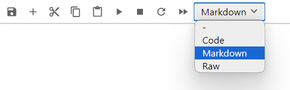
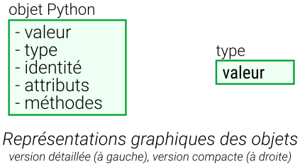
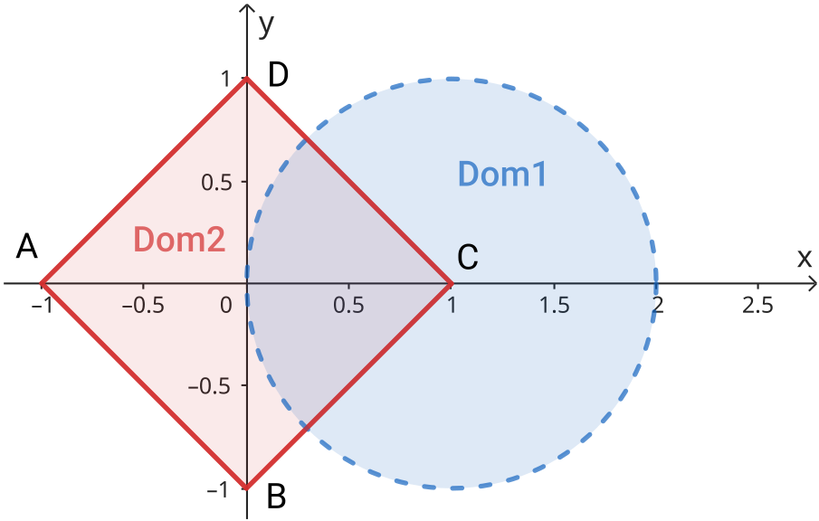
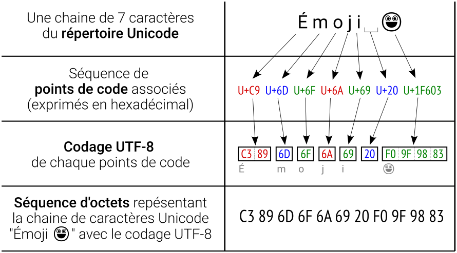
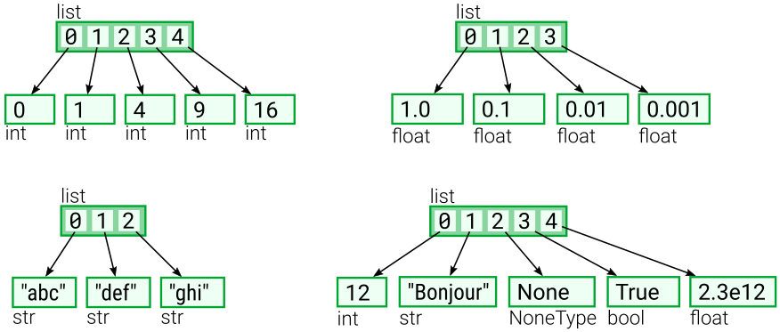

BE1 - Objet Python#
Ce document est un carnet Jupyter qui peut être téléchargé depuis le serveur e-campus. Pour travailler les exercices contenus dans ce carnet il est nécessaire de disposer d’un environnent Jupyter, on utilisera celui disponible sur le serveur JupyterHub de l’université Paris-Saclay.
Objectifs :
prendre en main de l’environnement Jupyter
comprendre les concepts de type, de muabilité, de séquence, d’itérateur
comprendre et manipuler les objets numériques de bases et les objets conteneurs (chaines de caractère, listes, n-uplets, ensembles, dictionnaires, intervalles)
comprendre et utiliser les instructions simples (expression, assignation, suppression, importation) et les instructions composées (comparaison, itération, répétition)
Sommaire :
Instructions de démarrage
Prise en main du carnet Jupyter
Objets Python
Types d’objets
Variables
Objets numériques
Chaines de caractères
Séquences
Listes
…
Organisation :
Le carnet alterne des présentations de connaissances et des exercices pratiques structurés en partie, section et sous-section.
Si le titre de section commence par “Exercice”, la section contient un énoncé à traiter, sinon elle contient des connaissances à lire.
Les titres contiennent une signalétique d’objectif à attendre, pour que chacun puisse adapter son travail en fonction de son niveau.
🟩🞳 indique un contenu incontournable pour attendre l’objectif de la séance, les étudiants et étudiantes novices pourront s’y concentrer
🟨🞳🞳 indique un contenu qui fait parti de l’objectif de l’ensemble du module, que les étudiants et étudiantes déjà familiers avec Python pourront aborder
🟥🞳🞳🞳 indique un contenu qui sera utile pour la suite de la formation, les étudiants et les étudiantes à l’aise pourront y améliorer leurs compétences.
0. 🟩🞳 Instructions de démarrage#
0.1 🟩🞳 Vocabulaire#
Un carnet Jupyter est un carnet électronique (notebook en anglais) qui permet de mixer narration, calculs et visualisation de résultats. Il est composé d’une séquence de cellules qui contiennent soit du texte brut, soit du texte riche (format markdown), soit du code informatique qui peut être exécuté et dont le résultat s’affiche dans la cellule.
L’application Jupyter assure les interactions entre le carnet Jupyter et le noyau d’exécution du code informatique, dans notre cas un interpréteur de langage Python. c’est la dorsale (backend en anglais) de Jupyter.
JuperterLab est une interface utilisateur (frontend en anglais) de Jupyter.
0.2 🟩🞳 Lancement de JupyterLab#
Pour utiliser un carnet, il faut disposer de l’application Jupyter et de son interface JupyterLab :
ouvrir un navigateur web (firefox, chrome, egde, safari, …) sur votre appareil (ordinateur, tablette …),
ouvrir la page du serveur JupyterHub de l’université Paris-Saclay se trouvant à l’adresse https://jupyterhub.ijclab.in2p3.fr/, la page de connexion au serveur s’affiche,
se connecter avec vos identifiants de l’école en cliquant sur le bouton Se connecter et en suivant les instructions, la page d’accueil du serveur s’affiche,
cliquer sur le bouton Start JupyterLab, l’interface JupyterLab s’ouvre.

Si la connexion au serveur ne fonctionnement pas, une solution alternative consiste à suivre le lien https://jupyterlite.rtfd.io/en/stable/try/lab, une version plus légère de l’application Jupyter est entièrement chargée et exécuter dans votre navigateur web.
L’interface de JupyterLab se compose :
d’une barre de menu située en haut qui expose les actions disponibles dans JupyterLab avec leurs raccourcis clavier.
d’une zone principale de travail qui permet d’organiser des documents (carnets, fichiers texte, etc.) et d’autres activités (terminaux, consoles de code, etc.) dans des panneaux d’onglets qui peuvent être redimensionnés ou subdivisés avec la possibilité de faire de glisser un onglet d’une zone vers une autre.
d’une barre latérale gauche rétractable qui propose en particulier
un navigateur de fichiers
la table des matières qui permet de visualiser et de naviguer facilement sur la structure d’un document

0.1 🟩🞳 Utilisation du carnet Jupyter#
Pour utiliser le carnet avec JupyterLab dans le serveur JupyterHub, il faut au préalable téléverser le carnet sur le serveur:
ouvrir le gestionnaire de fichiers en cliquant ➀ dans la barre latérale gauche (ou Ctrl+Maj+F)

cliquer ➁ sur l’icône de téléversement de fichier, puis sélectionner le fichier
be1_embed.ipynbsur votre appareil, le fichier apparait dans la liste des fichiers disponible sur le serveur.doublecliquer ➂ sur l’icône du fichier
be1_embed.ipynbdans la liste des fichiers disponible sur le serveur JupyterHub

le carnet s’ouvre dans JupyterLab
En fin de séance, pour télécharger le fichier modifié, cliquer ➂ avec le bouton droit et sélectionner dans le menu contextuel l’item “Télécharger”.
1. 🟩🞳 Prise en main du carnet Jupyter#
1.1 🟩🞳 Exercice - À la découverte des cellules#
Cliquer à différents endroits de ce document pour activer tour à tour les cellules qui le composent et voir leur portée.
1.2 🟩🞳 Exercice - Utilisation des cellules de code exécutable#
Cliquer dans la cellule ci-dessous, puis taper Maj+Entrée (la touche Maj est usuellement accompagnée du symbole ⇧ sur les claviers anglais, elle est dénotée Shift), ou cliquer sur l’icône ▶ dans la barre d’outils en haut du carnet. Cela exécutera le calcul \(1 + 1\) et affichera le résultat.
1 + 1
2
Exécuter de même les cellules ci-dessous, en modifiant les calculs à effectuer de votre choix.
2 * 3
6
2 * (3 + 4)
14
Ici, les exemples de calculs ont volontairement été choisis pour être très simples. Bien entendu, l’intérêt de Python et de Jupyter est de donner accès à des traitements plus riches.
1.3 🟨🞳🞳Exercice - Utilisation des cellules de code exécutable#
La cellule de code suivante montre un exemple plus riche, il s’agit d’une recherche dans une base de données en ligne. Le code recherche des produits alimentaires contenant le mot “courgette” dans la base Open Food Facts et affiche les 8 premiers produits trouvés. L’objectif n’est pas de comprendre les détails du code, mais plutôt de montrer l’interactivité de l’interface JupyterLab ; en changeant la chaine de caractères “courgette” par “chocolat”, les gourmands exploreront facilement la base de données selon leur gout, mais attention au nutriscore 😉 (indication : doublecliquer sur la cellule de code, en fin d’édition, appuyer sur les touches Maj+Entrée pour exécuter le code).
import requests # Bibliothèque pour gérér les requêtes HTTP/1.1
# Interrogation de la base de donnée Open Food Facts
url = "https://fr.openfoodfacts.org/cgi/search.pl" # URL de l'API
params = {"search_terms": "courgette", "json": 1} # Paramètres de la requête
data = requests.get(url, params=params).json() # Récupération des données
# Affichage des huit premiers produits
for p in data["products"][0:8]:
print(
"{} - nutriscore {} ({})".format(
p["product_name"],
p["nutrition_grade_fr"].upper(),
p["brands"],
)
)
Courgettes cuisinées à la provençale - nutriscore A (Cassegrain)
Poisson à l'andalouse riz safrané et courgettes grillées - nutriscore A (Marie)
Courgettes cuisinées à la provençale - nutriscore A (Cassegrain)
Purée de courgettes - nutriscore B (Créaline)
Purée délice - haricots verts, courgettes, épinards, pois, crème - 4 saveurs - nutriscore A (Bonduelle)
Les Tendres Carrés blé, petits pois, courgette & curry - nutriscore A (Céréal Bio)
4 Röstis de légumes et cheddar - nutriscore A (Picard)
Poulet & Purée de Courgettes pointe de crème fraîche - nutriscore B (Fleury Michon)
1.4 🟩🞳 Exercice - Création une cellule#
Afin d’ajouter vos commentaires ou vos codes Python dans le carnet, la création (insertion) d’une nouvelle cellule se fait à partir d’une cellule existante et présélectionnée (par exemple celle-ci), en utilisant le groupe d’icônes qui apparait
sélectionner une cellule, par exemple celle-ci,
cliquer sur l’icône pour ajouter une nouvelle cellule après la cellule sélectionnée,
sélectionner le type de la cellule créée à l’aide du menu déroulant situé parmi les icônes en haut du carnet Jupyter,
éditer le contenu de la cellule (3 exemples de contenus de cellule sont présentés ci-après).
Ci-dessous, un exemple de contenu de cellule est proposé pour les trois type de cellule : code, markdown et texte brut (raw)**
Cellule de code Python
# exemple de cellule de code Python
import sys
print(sys.version)
Cellule de texte riche (format Markdown, voir syntaxe)
#### Titre de niveau 4
Ceci est un paragraphe qui précède une liste à puce.
- un *mot* en caractères italiques
- un **mot** en caractères gras
- un lien vers une page web donnant la syntaxe markdown :
[cliquer](https://www.markdownguide.org/basic-syntax/)
Cellule de texte brut (Raw)
,_ _
|\\_,-~/
/ _ _ | ,--.
( @ @ ) / ,-' texte brut
\ _T_/-._( ( pour conserver
/ `. \ la disposition
| _ \ | des signes
\ \ , / | _
|| |-_\__ / __(.)⦟
((_/`(____,-' \___)
1.5 🟩🞳 Exercice - Modification des cellules de texte#
Saisissez vos noms et prénoms et votre couleur préférée dans la cellule ci-dessous (Indication : doublecliquer sur la cellule de texte, en fin d’édition, appuyer sur les touches Maj+Entrée).
Essayer de modifier la cellule où est écrit ce texte, vous constaterez qu’elle est verrouillée.
Nom :
Prénom :
Couleur préférée :
1.6 🟩🞳 Exercice - Affichage de résultats d’exécution#
Dans un carnet Jupyter, en fin d’exécution d’une cellule de code, si un objet est le résultat de la dernière instruction, alors il est affiché.
12 + 34 # addition de deux nombres
25 / 2 # division d'un nombre par un autre
5 ** 3 # exponentiation de base 5 et d'exposant 3
125
Dans la cellule de code précédente, on observe que son exécution génère comme seule sortie, le nombre 125, c’est-à-dire \(5^3\), le résultat de la dernière instruction.
Pour afficher plus de détails sur les résultats des instructions intermédiaires, il faut explicitement générer une sortie d’affichage, par exemple avec la fonction print(), une fonction native de Python.
Syntaxe : print(<expression_1>, <expression_2> ... <expression_n>)
Sémantique : en allant de gauche à droite, de l’expression <expression_1> à l’expression <expression_n>, la fonction répète les deux actions suivantes — 1. évaluation de l’expression, 2. affichage de la représentation textuelle de l’objet résultat de l’évaluation. Par défaut, un espace “ “ est ajouté entre chaque objet et un retour à la ligne conclut l’affichage de l’ensemble.
Exemples :
print("Bonjour", 12, 30 / 4) # Affiche "Bonjour 12 7.5"
print("30 / 4 =", 30 / 4) # Affiche "30 / 4 = 7.5"
Bonjour 12 7.5
30 / 4 = 7.5
Proposer une modification de la cellule de code qui suit, afin que le résultat de chaque expression soit affichée dans la partie résultat de la cellule.
12 + 34 # addition de deux nombres
25 / 2 # division d'un nombre par un autre
5 ** 3 # exponentiation de base 5 et d'exposant 3
125
# Proposition de solution
print(12 + 34) # addition de deux nombres
print(25 / 2) # division d'un nombre par un autre
print(5 ** 3) # exponentiation de base 5 et d'exposant 3
46
12.5
125
1.8 🟩🞳 Exercice - Sauvegarde du carnet modifié#
Sauvegarder le carnet. Pour cela, il y a trois possibilités :
Utiliser le menu : aller dans le menu en haut de JupyterLab. Cliquez sur
Fichier(“File” en anglais), puis sélectionnezSauvegarder Notebook(“Save Notebook” en anglais) dans le menu déroulant. Cela enregistrera immédiatement les modifications apportées à votre carnet.Utiliser un raccourci clavier : pour sauvegarder rapidement votre carnet, le raccourci par défaut est Ctrl + S.
Sauvegarde automatique : JupyterLab dispose également d’une fonction de sauvegarde automatique qui enregistre périodiquement le carnet. Cependant, il est toujours recommandé de sauvegarder manuellement les modifications importantes pour éviter toute perte de données.
Remarque : le fichier sauvegardé est enregistré sur la serveur JupyterHub et non pas sur votre appareil (ordinateur, tablette …). En fin de séance, pensez à télécharger le fichier sauvegarder (voir instruction en fin de la section “0 - Instructions de démarrage”)
2. 🟩🞳 Objets Python#
2.1 🟩🞳 Définition#
Avec Python toutes les données sont représentées sous forme d’objets. Il s’agit d’une entité stockée dans la mémoire de l’ordinateur, qui possède :
une valeur - On dit que les objets
aetbpossèdent la même valeur si l’évaluation de l’expression de comparaisona == bretourneTrue(ou plus exactement un objet de type booléen et de valeur égale àTrue). Python ne dispose pas de méthode canonique pour accéder à la valeur d’un objet.un type - Chaque objet est l’instance d’une classe que l’on appelle aussi le type de l’objet. Un objet conserve toujours le même type au cours de son existence en mémoire, on parle de typage fort du langage Python. La fonction native
type()retourne le type (la classe) de l’objet passé en argument. On dit que les objetsaetbpossèdent le même type si l’évaluation de l’expressiontype(a) == type(b)retourneTrueune identité - Chaque objet possède une identité unique qui ne change jamais au cours de son existence en mémoire, on parle d’identifiant. La fonction native
id()retourne l’identifiant de l’objet passé en argument. On dit que les objetsaetbont la même identité s’ils ne font qu’un, c’est-à-dire si l’évaluation de l’expressionid(a) == id(b)retourneTrue, c’est-à-dire si l’évaluation de l’expressiona is bretourneTrue.des attributs-données, éventuellement aucun - Les attributs-données, parfois simplement nommés attributs, sont des données de n’importe quel type qui caractérisent l’objet. Elle sont dites encapsulées dans l’objet. Pour désigner un attribut nommé
nom_attrde l’objetobjil y a deux possibilités :la notation “pointée”
obj.nom_attrla fonction native
getattr(obj, nom_attr)
des attributs-méthodes, éventuellement aucun - Les attribut-méthodes, parfois simplement nommées méthodes, sont utiles pour définir des comportements spécifiques à l’objet, permettant ainsi une grande flexibilité et encapsulation des données. Ce sont des fonctions encapsulées qui s’appliquent à l’objet qui la possède. Pour appeler la méthode
meth()de l’objetobj, il est également possible d’utiliser la notation pointée :obj.meth()avec éventuellement des arguments à transmettre entre les paranthèses.
La figure suivante, illustre graphiquement la notion d’objet Python. A droite, une version détaillée qui montre tout ce qui est encapsulé dans l’objet (sa valeur, son type, son identité, ses attribut-données et ses attributs-méthodes) et à gauche une représentation compacte avec juste son type et sa valeur.
2.2 🟩🞳 Exemple d’objet#
Exemple de représentations graphique de l’objet "Bonjour", un objet de type str (chaine de caractères) de valeur Bonjour, qui ne dispose que d’un attribut-donnée __doc__ et qui possède de nombreux attributs-méthodes comme upper() ou split().
La valeur de l’objet "Bonjour" est la chaine de caractères Bonjour
Pour obtenir le type de l’objet, on utilise la fonction native type()
type("Bonjour") # renvoie le type (classe) de l'objet "Bonjour"
str
Pour obtenir l’identité de l’objet, on utilise la fonction native id()
id("Bonjour") # renvoie l'identité de l'objet "Bonjour"
1934569458480
Les opérateurs is et is not testent l’égalité des identifiants des objets : x is y est vrai si et seulement si x et y sont le même objet. L’identifiant d’un objet est déterminé en utilisant la fonction native id(). L’expression x is not y renvoie le résultat contraire de l’égalité des identifiants. Exemples :
"Bonjour" is "Bonjour" # renvoie True
"Bonjour" is not "Bonjour" # renvoie False
Pour obtenir l’attribut-donnée __doc__, commun à tout les objets de type str (chaine de caratères) qu’il documente, on utiilise soit la notation “pointée” "Bonjour".__doc__, soit la fonction native getattr(obj, nom_attr). L’attribut __doc__ est une chaine de caratères multilignes.
"Bonjour".__doc__ # renvoie l'attribut __doc__ de l'objet "Bonjour"
getattr("Bonjour", "__doc__") # renvoie l'attribut __doc__ de l'objet "Bonjour"
print("Bonjour".__doc__) # Affiche l'attribut __doc__ de l'objet "Bonjour"
str(object='') -> str
str(bytes_or_buffer[, encoding[, errors]]) -> str
Create a new string object from the given object. If encoding or
errors is specified, then the object must expose a data buffer
that will be decoded using the given encoding and error handler.
Otherwise, returns the result of object.__str__() (if defined)
or repr(object).
encoding defaults to sys.getdefaultencoding().
errors defaults to 'strict'.
Parmi les methodes de l’objet "Bonjour" on trouve les methodes communes à tous les objets de la classe str, comme upper() ou split().
La méthode upper() renvoie un nouvel objet de type chaine de caractère formé à partir de l’objet sur lequel on applique la méthode.
"Bonjour".upper() # applique la méthode upper() à l'objet "Bonjour"
'BONJOUR'
La méthode split() utilisée avec la chaine sep comme argument, split(sep), renvoie une liste des chaines de caractères présentes dans l’oject et qui sont séparées par la “sous-chaine” sep.
"Bonjour".split("o") # applique la méthode split() à l'objet "Bonjour"
['B', 'nj', 'ur']
Pour connaitre la liste des attributs et des méthodes disponibles pour un objet d’un certain type il y a l’incontournable documentation officielle en ligne du langage python (par exemple Méthodes de chaines de caractères) et il y a les outils d’assistance de l’environnement de développement intégré (IDE pour Integrated Development Environment en anglais). Ici nous utilisons l’IDE JupyterLab qui met en oeuvre la fonctionnalité de complétion de code.
La complétion de code est une suggestion de code à partir du début de l’instruction déjà saisie. Par exemple, après avoir saisi "bonjour"., JupyterLab s’attend à la saisie du nom d’une méthode de l’objet "Bonjour". À votre demande par l’appui sur la touche Tab ↹, la liste des suites possibles vous est proposée. Si une proposition est sélectionnée, le code correspondant est inséré.
Exemple : la copie d’écran ci-dessous montre l’effet de la saisie "Bonjour". + Tab ↹
2.3 🟩🞳 Exercice - Inspection par complétion#
Inspecter les attributs (données ou méthodes) que possède l’objet "Bonjour" en utilisant la complétion de code de l’environnement de développement (JypyterLab) sur les débuts d’expression suivant :
"Bonjour".u+ Tab ↹ (une propositions)"Bonjour".c+ Tab ↹ (quatre propositions)"Bonjour".is+ Tab ↹"Bonjour".+ Tab ↹
# Zone de test pour la complétion
3. 🟩🞳 Types d’objets (classes)#
3.1 🟩🞳 Principales catégories#
Python propose de nombreux types de données adaptées à chaque besoin de codages. On peut les classer :
par leur localisation (natif, bibliothèque standard, bibliothèques tierces)
par son contenu modifiable ou non (muabilité, mutability en anglais)
par l’organisation de son contenu (simple, conteneur, autre…)
Au regard de leur localisation, on distingue (dans ce BE on étudie uniquement les types natifs) :
types natifs disponibles dès le lancement de l’interpréteur Python
exemples : les nombres, les chaines de caractères, les listes, les ensembles, les dictionnaires …types de la bibliothèque standard disponibles dans toutes les distributions de Python, mais qui nécessitent le chargement d’un module avec l’instruction
import
exemples : les fractions (modulefractions), les dates (moduledatetime) …types des bibliothèques tierces disponibles après installation et chargement d’un module spécifique
exemples : les figures (modulematplotlib), les matrices de numériques de mêmes types (modulenumpy), les réseaux de neurones récurrents (moduletensorflow)types utilisateurs définis par le développeur avec l’instruction
class
La muabilité des types d’objets se décline en deux catégories :
types muables (mutable en anglais) - la valeur d’un objet de type muable qui peut être changée sans que l’identité de l’objet ne change. Un objet de type muable peut avoir plusieurs valeurs successives au cours de l’exécution du programme.
types immuable (immutable en anglais) - la valeur d’un objet de type immuable ne peut pas être changée au cours de l’exécution du programme. Si ou souhaite une nouvelle valeur, alors il faut utiliser un autre objet.
Les types peuvent également se classer en grandes catégories de contenu, d’où découlent des méthodes d’accès de des méthodes de manipulations de leurs données :
types de base qui contiennent une donnée élémentaire comme les types numériques. Ces types de bases sont les fondations sur lesquelles sont construits les types de données plus élaborés comme les types conteneurs
types conteneurs qui contiennent une collection d’éléments
types ensembles qui contiennent une collection d’éléments en vrac (éléments non indicés)
types séquences qui contiennent une collection d’éléments indicés par des nombres entiers.
types associations qui contiennent une collection d’éléments indicés par des clés, des objets Python
types appellable comme les fonctions, les méthodes
types divers comme les fichiers, les modules …
Le tableau ci-dessous regroupe les principaux types natifs par catégorie
Immuable |
Muable |
|
|---|---|---|
base |
- nombre entier |
|
Containeurs de type |
- ensemble figé |
- ensemble |
Containeurs de type |
- chaine de caractères |
- liste |
Containeurs de type |
- dictionnaire |
3.2 🟩🞳 Exemples de types de base#
Voici quelques exemples de types (classes) de base du langage Python :
Les nombres entiers sans partie décimale
type :int
Exemples :42,-3,0Les nombres réels avec une partie décimale
type :float
Exemples :3.14,-0.001,2.0,1.602e-19Les chaines de caractères
type :str
Exemples :"Bonjour",'Python'Les booléens
type :bool
Exemples :True(vrai),False(faux) qui sont les deux seuls représentants de leur typeLes “vides” ou les “absences de valeur”
type :NoneType
Exemple :Nonequi est le seul représentant de son type
3.1 🟩🞳 Exercice - Inspection du type des objets#
En utilisant la fonction interne type(), identifier le type (classe) des objets renvoyés par les expressions suivantes :
'42'"42"3 * 26 / 2123.45True1 > 2Noneprintprint("Bonjour")type(123.45)
# Insérer votre code ici
# Proposition de solution
print("Type de '42' :", type('42')) # littéral de chaîne de caractères
print('Type de "42" :', type("42")) # littéral de chaîne de caractères
print('Type de 3 * 2 :', type(3 * 2)) # la multiplication d'entier renvoie un entier
print("Type de 6 / 2 :", type(6 / 2)) # le divison renvoie un nombre flottant
print('Type de 123.45 :', type(123.45)) # littéral de nombre flottant
print('Type de True :', type(True)) # littéral de booléen
print("Type de 1 > 2 :", type(1 > 2)) # la comparaison de deux nombres renvoie un booléen
print('Type de None :', type(None)) # le seul littéral de NoneType
print('Type de print :', type(print)) # fonction native
print('Type de print("Bonjour") :', type(print("Bonjour"))) # la fonction print renvoie None et affiche "Bonjour"
print('Type de type(42) :', type(type(42))) # la fonction type() renvoie un type
Type de '42' : <class 'str'>
Type de "42" : <class 'str'>
Type de 3 * 2 : <class 'int'>
Type de 6 / 2 : <class 'float'>
Type de 123.45 : <class 'float'>
Type de True : <class 'bool'>
Type de 1 > 2 : <class 'bool'>
Type de None : <class 'NoneType'>
Type de print : <class 'builtin_function_or_method'>
Bonjour
Type de print("Bonjour") : <class 'NoneType'>
Type de type(42) : <class 'type'>
4. 🟩🞳 Variables (lien étiquette-objet)#
4.1 🟩🞳 Définition#
Dans le langage Python, les variables agissent comme des étiquettes ou des références à des objets en mémoire. Contrairement à certains autres langages de programmation (ex: C, Matlab…) pour lesquels les variables sont des boites (emplacements) contenant des données, en Python, une variable pointe vers un objet qui réside quelque part en mémoire. Une variable (étiquette) réfère (pointe) un et un seul abject ; à l’inverse, un objet peut être assigné à plusieurs variables.

La constitution d’un nom de variable est soumis à des règles impératives issues de la grammaire du langage Python et des conventions fortement recommandées pour faciliter la lecture du code par toute la communauté des développeurs.
Règles de nommage des variables
Utiliser uniquement des lettres, des chiffres, et des tirets bas : un nom de variable est composé de lettres (a-z, A-Z), de chiffres (0-9) et de tirets bas (_)
Ne pas commencer par un chiffre : un nom de variable ne peut pas commencer par un chiffre
Ne pas utiliser les mots réservés : les mots réservés du langage ne peuvent pas être utilisés comme noms de variables, exemples if, for, while, True, False, etc
Conventions de nommage des variables ([PEP8(https://peps.python.org/pep-0008/#function-and-variable-names)])
snake case : les noms de variables doivent être en minuscules avec les mots séparés par des tirets bas
_, exemplenom_de_variableN’utilisez jamais les caractères
l(lettre L minuscule) ouI(lettre i majuscule) comme noms de variables à caractère unique, car ils se confondent trop facilement selon la police de caractères utilisée. Idem pour le caractèreO(lettre o majuscule) qui peut se confondre avec le chiffre 0.
4.2 🟩🞳 Instruction d’assignation#
L’instruction d’assignation, ou plus simplement l’assignation, construit l’association entre un nom (étiquette) et un objet. Une fois nommé, un objet pourra être réutilisé autant de fois que nécessaire dans le code. la syntaxe de base d’une instruction d’assignation est
nom_de_variable = expression
et la sémantique (comportement) de l’instruction est la suivante
l’
expressionest évaluée et retourne un abject qui est situé dans l’espace des objets Pythonsi l’étiquette
nom_de_variablen’existe pas dans l’espace des noms, elle est crééel’objet est assigné à l’étiquette
nom_de_variable, on dit quenom_de_variableréfère ou pointe l’objet
Exemple du comportement de 3 assignations successives
Numéro |
Code |
Sémantique |
Illustration |
|---|---|---|---|
1 |
|
- |
|
2 |
|
- |
|
3 |
|
- |
|


Remarques sur la situation en fin d’exécution des trois assignations
l’objet
152.5est assigné à plusieurs variables ou réciproquement, plusieurs noms pointent sur le même objetl’objet
305n’est assigné à aucune variable. Il ne pourra plus être utilisé, et il a pour vocation d’être supprimé de la mémoire par un mécanisme interne à l’interpréteur Python : le ramasse-miette (garbage collector en anglais).
Les assignations peuvent prendre plusieurs formes en Langage Python :
L’assignation de base (vue juste au-dessus)
syntaxe :nom_de_variable = expression
sémantique : l’expressionest évaluée, l’objet résultant est assigné à la variablenom_variable.x = 10 + 2 # assigne l'objet 12 à la variable x
L’assignation multiple permet d’assigner des valeurs à plusieurs variables en une seule ligne.
syntaxe :nom_1, nom_2, ... nom_n = exp_1, exp_2, ... exp_n
sémantique : la partie à droite du signe=est évaluée en premier et de gauche à droite, puis les assignations aux variables de la partie gauche se font à leur tour de gauche à droite. Cela donne la séquence suivante - évaluation deexp_1, évaluation deexp_2, … évaluation deexp_n, assignation ànom_1de l’objet obtenu après l’évaluation deexp_1, assignation ànom_2de l’objet obtenu après l’évaluation deexp_2, … assignation ànom_nde l’objet obtenu après l’évaluation deexp_nx, y = 305, "Bonjour" # 305 est assigné à x, "Bonjour" est assigné à y x, y = y, x # échange les objets pointés par les variables x et y
l’assignation chainée permet de lier plusieurs variables au même objet.
syntaxe :nom_1, nom_2, ... nom_n = expression
sémantique : l’expressionest évaluée, l’objet résultant est assigné successivement aux variables de la partie gauche dans l’ordre de gauche à droite.x = y = z = 10 # x, y, et y pointent toutes vers le même objet 10
l’assignation augmentée permet de réaliser une opération et une assignation simultanément, ce qui est utile pour modifier la valeur d’une variable basée sur sa valeur courante.
syntaxe :nom_de_variable ∴= expression
ou∴∈ {+,-,*,@,/,//,%,**,>>,<<,&,^,|}
sémantique : un assignation augmentée peut se réécrire comme l’assignation de base suivantenom_de_variable = nom_de_variable ∴ expression, et elle en a la même sémantiquex = 355 x -= 50 # équivalent à x = x - 50, x pointe maintenant sur l'entier 305
4.3 🟩🞳 Exercice - Assignations#
Créer les objets “Bonjour”, 25 et -432 et les assigner respectivement aux variables (noms) x, y et z. En fin d’exécusion du code l’organisation de l’espace des noms et objets devra être celui la figure ci dessous.

# Insérez votre code ici pour assigner x, y et z
# Proposition de solution
x = "Bonjour"
y = 25
z = -432
Pour valider le code de la cellule ci-dessus, après son exécution, exécuter à son tour la cellule ci-dessous. Si rien d’apparent ne se produit, votre code est validé (valeurs et types sont corrects), sinon un message d’erreur apparait (une exception AssertionError est levée).
# Cellule de test de la cellule de code précédente
assert x == "Bonjour", "La valeur de x n'est pas correcte"
assert type(x) is str, "Le type de x n'est pas correct"
assert y == 25, "La valeur de y n'est pas correcte"
assert type(y) is int, "Le type de y n'est pas correct"
assert z == -432, "La valeur de z n'est pas correcte"
assert type(z) is int, "Le type de z n'est pas correct"
4.4 🟩🞳 Instruction de suppression#
L’instruction de suppression détruit des noms (étiquette) et leur association des objets Python. Elle joue le rôle inverse de l’instruction d’assignation, elle est importante lorsque l’on souhaite libérer de l’espace en mémoire. La syntaxe de base d’une instruction de suppression est
del nom_1, nom_2 ... nom_n
et la sémantique (comportement) de l’instruction de suppression est : suppression de gauche à droite des nom_i et de leur lien avec les objets Python.
Exemple du comportement de quelques instructions
Numéro |
Code |
Sémantique |
Illustration |
|---|---|---|---|
1 |
|
- |
|
3 |
|
- suppression du nom |
|
4 |
|
- suppression des noms |
|


Remarque : l’instruction del supprime des noms, pas des objets ; lorsque plus aucun nom ne réfère à un objet Python, ce dernier devient inatteignable et il a pour vocation d’être supprimé de la mémoire par un mécanisme interne à l’interpréteur Python, le ramasse-miette (garbage-collector en anglais).
5. 🟩🞳 Objets de type numérique#
5.1 🟩🞳 Introduction#
Il existe quatre types numériques de base et distincts :
les nombre entiers (integers en anglais) qui servent à représenter les entiers relatif de \(\mathbb{Z}\). Avec Python3, il n’y a pas de limite supérieure, ni de limite inférieure aux entiers (hormis l’espace mémoire disponible), c’est une caractéristique rare parmi les langages de programmation.
les nombres à virgule flottante (floating-point numbers en anglais, souvent abrégés en “nombres flottants” ou simplement “flottants) qui servent à représenter les nombres réels de \(\mathbb{R}\) moyennant quelques approximations et limitations.
les nombres complexes (complex numbers en anglais) avec une partie réelle et une partie imaginaire qui servent à représenter les nombres complexes de \(\mathbb{C}\) moyennant aussi quelques approximations et limitationspuisque la partie réelle et la partie imaginaire sont représentées sous forme de nombres à virgule flottante.
les nombres booléens (booleans en anglais) qui se limitent à deux représantants
True(Vrai en français) etFalse(Faux en français). Pour python les nombres booléens et les nombre entiers sont deux spécialisations d’une même famille de nombre.
Pour créer un objet numérique, il existe trois moyens :
les littéraux (ex:
123456789,1,602e-19,3j,True)les constructeurs d’instances de classe (
int(),float(),complex(),bool())les expressions à base d’opérateurs et de fonctions (ex :
+,-,*,/,not,and,or,abs(),pow(),round(),max(),min())
Le tableau suivant donne les principales manières de construire un objet de type numérique
Entiers |
Flottants |
Complexes |
Booléen |
|
|---|---|---|---|---|
Littéraux |
|
avec un point décimal |
entier ou flottant littéral avec |
|
Constructeurs |
|
|
|
|
Expressions |
|
|
|
|
On notera le caractère polymorphe des constructeurs int(), float(), complex() et bool() qui acceptent à la fois un nombre variable d’arguments et qui d’adaptent au type de leurs arguments. Cela permet une grand souplesse d’utilisation.
5.1 🟩🞳 Exercice - Littéraux numériques#
Créer les variables suivantes à partir de littéraux ou constructeurs d’instance, en étant vigilant sur l’exactitude de la valeur des objets de type entier :
Nom |
Type |
Description de l’objet |
|---|---|---|
|
entier |
Nombre d’Avogadro dont la valeur exacte est \(6.022 140 76 \times 10^{23} \; \text{mol}^{−1}\) |
|
entier |
Un 1 suivi de 100 zéros |
|
flottant |
Masse d’un électron au repos, \(9.109 534 \times 10^{-31} \text{kg}\) |
# Insérez votre code ici pour créer n_a, googol et m_e
# Proposition de solution
n_a = 602214076000000000000000
print("Nombre d'Avogadro =", n_a)
# Attention
# ---------
# >>> n_a = int(6.02214076e23)
# >>> print(n_a)
# 602214075999999987023872
#
# L'assignation ci-dessus de n_a avec l'entier construit à partir
# du flottant littéral 6.02214076e23 génère une erreur d'arrondi.
googol = 1_0000000000_0000000000_0000000000_0000000000_0000000000_0000000000_0000000000_0000000000_0000000000_0000000000
print("1 googol =", googol)
# Note 1:
# -------
# Les underscores au milieu des nombres littéraux est ignoré par Python.
# Cela permet de séparer les chiffres pour une meilleure lisibilité.
# Par exemple, 1_000_000_000 est équivalent à 1000000000.
#
# Note 2:
# -------
# Python perd en compte les entiers arbitrairement grands,
# uniquement limités par la mémoire de l'ordinateur.
m_e = 9.109534e-31
print("masse de l'électron au repos =", m_e, "kg")
Nombre d'Avogadro = 602214076000000000000000
1 googol = 10000000000000000000000000000000000000000000000000000000000000000000000000000000000000000000000000000
masse de l'électron au repos = 9.109534e-31 kg
5.2 🟩🞳 Expressions numériques#
Pour créer des objets de type numériques avec des expressions, le tableau suivant donne les opérateurs qui s’appliquent aux objets de type numérique (les colonnes “Entiers”, “Flottants” et “Complexes” indiquent quels types numériques sont pris en compte) :
Opération |
Résultat |
Entiers |
Flottants |
Complexes |
|---|---|---|---|---|
|
somme de x et y |
✔ |
✔ |
✔ |
|
différence de x et y |
✔ |
✔ |
✔ |
|
produit de x et y |
✔ |
✔ |
✔ |
|
quotient de x par y, résultat de la division |
✔ |
✔ |
✔ |
|
x à la puissance y |
✔ |
✔ |
✔ |
|
négatif de x |
✔ |
✔ |
✔ |
|
x inchangé |
✔ |
✔ |
✔ |
|
quotient entier de x par y |
✔ |
✔ |
|
|
reste de la division de x par y (1) |
✔ |
✔ |
|
|
“ou” bit à bit de x et y (1) |
✔ |
||
|
“ou exclusif” bit à bit de x et y (1) |
✔ |
||
|
“et” bit à bit de x et y (1) |
✔ |
||
|
x décalé vers la gauche de n bits, |
✔ |
||
|
x décalé vers la droite de n bits, |
✔ |
||
|
les bits de x inversés (1) |
✔ |
(1) Les opérateurs sur le bits sont souvent utilisés pour manipuler des registres de microcontrôleur, en particulier en informatique embarquée, par exemple dans les projets LDD3 108-208.
La liste suivante résume les priorités de ces opérateurs, du plus prioritaire (portée la plus courte) au moins prioritaire (portée la plus grande) :
(expression...),**(puissance),-x+x~(négatif, positif, inversion bit à bit),*///%(multiplication, division, division entière, reste),+-(addition, soustraction),<<>>(décalages),&(“et” bit à bit),^(“ou exclusif” bit à bit),|(“ou” bit à bit)
Illustration de la notion de priorité des opérateurs avec l’expression -u ** 1 / 2. En lisant l’expression de gauche à droite :
- u ** 1-> on applique l’opérateur-plus prioritaire que**, on peut ainsi remplacer-upar(-u)(-u) ** 1 / 2-> on applique l’opérateur/plus prioritaire que**, on peut ainsi remplacer1 / 2par(1 / 2)(-u) ** (1 / 2)-> il ne reste que l’opérateur**à appliquer, il sera de fait exécuté en dernier, car il est moins prioritaire.
5.3 🟩🞳 Exercice - Expressions numérique#
Créer, puis afficher, les variables suivantes à partir d’expressions numériques, toujours en étant vigilant sur l’exactitude de la valeur des objets de type entier :
Nom |
Type |
Description de l’objet |
valeur approchée attendue |
|---|---|---|---|
|
entier |
Un 1 suivi de 100 zéros |
la valeur exacte est attendue |
|
flottant |
Nombre d’or, solution de l’équation \(\phi^2 = \phi + 1\) |
\(1.618\) |
|
flottant |
Valeur approchée de \(\pi\) |
\(3.14\) |
|
flottant |
Unique solution de l’équation \(\psi^3 = 1 + \psi\) |
\(1.325\) |
# Insérez votre code ici
# Proposition de solution
googol = 10 ** 100
print("1 googol =", googol)
# Attention
# ---------
#
# >>> googol = int(1e100)
# >>> print(googol)
# 10000000000000000159028911097599180468360808563945281389781327557747838772170381060813469985856815104
#
# L'utilisation du flottant littéral 1e100 génère une erreur d'arrondi
nb_or = (1 + 5 ** 0.5) / 2
print("nb_or =", nb_or)
pi_approxi = 4 / (1 + 1**2 / (2 + 3**2 / (2 + 5**2 / (2 + 7**2 / 3**2))))
print("pi_approxi = ", pi_approxi)
psi = ((1/2) + (69)**(1/2)/18) ** (1/3) + ((1/2) - (69)**(1/2)/18) ** (1/3)
print("psi = ", psi)
1 googol = 10000000000000000000000000000000000000000000000000000000000000000000000000000000000000000000000000000
nb_or = 1.618033988749895
pi_approxi = 3.145238095238095
psi = 1.3247179572447458
# test du code précédent à l'execption b_1
assert googol == 10000000000000000000000000000000000000000000000000000000000000000000000000000000000000000000000000000, "La valeur de googol est incorrecte"
assert (nb_or - 1.618033988749895) < 1e-11, "La valeur de nb_or est incorrecte"
assert (pi_approxi - 3.14159) < 5e-3, "La valeur de pi_approxi est incorrecte"
assert (psi - 1.324717957244746) < 1e-11, "La valeur de psi est incorrecte"
5.4 🟩🞳 Expressions booléennes (1)#
Pour construire des expressions booléennes, Python propose trois opérateurs booléens and (conjonction), or (disjonction) etnot (négation). Ces trois opérateurs sont moins prioritaires que ceux précédemment évoqués, et leur ordre relatif de priorité est du plus prioritaire (portée la plus courte) au moins prioritaire (portée la plus grande) :
notandor
Lorsqu’ils opèrent sur des booléens, la sémantique de ces trois opérateurs est présentée dans la table de vérité ci-dessous ; elle est conforme aux usages.
Résultat de |
Résultat de |
Résultat de |
Résultat de |
Résultat de |
|---|---|---|---|---|
|
|
|
|
|
|
|
|
|
|
|
|
|
|
|
|
|
|
|
|
5.5 🟨🞳🞳 Expressions booléennes (2)#
La particularité de ces opérateurs est qu’ils acceptent tous les types d’objets ! En effet, dans un contexte booléen (là ou Python attent une valeur booléenne), tous les objets peuvent être évalués à une valeur booléenne. Par défaut, un objet x est considéré True sauf s’il possède la méthode interne x.__bool()__ qui revoie False ou qu’il possède la méthode interne x.__len()__ qui revoie 0 (objet de “taille” nulle).
Voici quelques objets natifs considérés comme False (évalué à False dans un contexte booléen) :
les zéros des types numériques :
0(l’entier zéro),
0.0(le flottant zéro),
0j(le complexe zéro), et évidemment
False(le booléen zéro)les séquences et collections vides :
""(la chaine de caractères vide),
[](la liste vide),
()(le n-uplet vide),
{}(le dictionnaire vide),
set()(l’ensemble vide)l’objet
None
Dans le cas général, la sémantique des opérateurs booléens est :
l’opérateur
andrenvoie l’objet à gauche s’il est évalué àFalse, sinon il renvoie l’objet de droite, même s’il vautFalse.l’opérateur
orrenvoie l’objet à gauche s’il est évalué àTrue, sinon il renvoie l’objet à gauchel’opérateur
notappliqué à l’objectéxrenvoie le booléennot bool(x)
Cela se traduit par le tableau suivant
Résultat de |
Résultat de |
Résultat de |
Résultat de |
Résultat de |
|---|---|---|---|---|
|
|
|
|
|
|
|
|
|
|
|
|
|
|
|
|
|
|
|
|
Exemples :
True and True # donne True (tous les opérandes sont booléens)
True and -1 # donne -1
True and 0.0 # donne 0.0
-1 and True # donne True
0.0 and True # donne 0.0
False and 3.14 # donne False
True or False # donne True
True or 1j # donne True
False or 2 # donne 2
False or 0.0 # donne 0.0
[] or "Liste vide" # donne 'Liste vide'
[1, 2] or "Liste non vide" # donne [1, 2]
"" or "Chaine vide" # donne 'Chaine vide'
"A" or "Chaine non vide" # donne 'A'
not 0 # donne True
not 3.14 # donne False
not "" # donne True
not "A" # donne False
not None # donne True
L’usage le plus courant est la simplification des tests sur les séquences ou collections vides. Cela permet également de construire un objet en fonction de la valeur nulle ou de la longueur nulle d’un autre objet, comme dans le code suivant :
x = 1 #
propriete_de_x = (not x and "x est nul") or "x est non nul"
print(propriete_de_x) # Affiche "x est nul" si x vaut 0, sinon "x est non nul"
x est non nul
5.6 🟥🞳🞳🞳 Exercice - Expressions booléennes#
Créer, puis afficher, la variable b_1 à partir d’expressions numériques booléennes, toujours en étant vigilant sur l’exactitude de la valeur des objets de type entier :
Nom |
Type |
Description de l’objet |
valeurs attendues |
|---|---|---|---|
|
booléen |
Soit \(a \in \mathbb{Z}\) |
Quelques valeurs exactes |
# Insérez votre code ici
# Proposition de solution
a = -4
# dans un contexte numérique :
# (a**2 - 1) % 3 vaut 0 si a est multiple de 3, sinon 1 ou 2
# dans un contexte booléen
# (a**3 - 1) % 3 vaut False si a est multiple de 3, sinon True
b_1 = not bool((a**2 - 1) % 3) or not bool((a**3 - 1) % 5)
# le constructeur d'instance bool() n'est pas nécessaire il est là pour la clarté
# b_1 = not (a**2 - 1) % 3 or not (a**3 - 1) % 5 # est équivalent
print("a =", a, " ⇒ b_1 =", b_1)
a = -3
b_1 = not bool((a**2 - 1) % 3) or not bool((a**3 - 1) % 5)
print("a =", a, " ⇒ b_1 =", b_1)
a = 0
b_1 = not bool((a**2 - 1) % 3) or not bool((a**3 - 1) % 5)
print("a =", a, " ⇒ b_1 =", b_1)
a = 1
b_1 = not bool((a**2 - 1) % 3) or not bool((a**3 - 1) % 5)
print("a =", a, " ⇒ b_1 =", b_1)
a = 3
b_1 = not bool((a**2 - 1) % 3) or not bool((a**3 - 1) % 5)
print("a =", a, " ⇒ b_1 =", b_1)
a = 4
b_1 = not bool((a**2 - 1) % 3) or not bool((a**3 - 1) % 5)
print("a =", a, " ⇒ b_1 =", b_1)
a = -4 ⇒ b_1 = True
a = -3 ⇒ b_1 = False
a = 0 ⇒ b_1 = False
a = 1 ⇒ b_1 = True
a = 3 ⇒ b_1 = False
a = 4 ⇒ b_1 = True
5.7 🟩🞳 Fonctions natives sur les numériques#
Le tableau suivant liste les fonctions natives qui retournent un objet numérique
Fonction native |
Résultat |
Entiers |
Flottants |
Complexes |
Booléens |
|---|---|---|---|---|---|
|
valeur absolue de x |
✔ |
✔ |
✔ |
✔ |
|
x à la puissance y, |
✔ |
✔ |
✔ |
✔ |
|
x à la puissance y modulo z, |
✔ |
✔ |
✔ |
✔ |
|
valeur arrondie de x à l’entier le plus proche |
✔ |
✔ |
✔ |
|
|
valeur arrondie de x avec une précision |
✔ |
✔ |
✔ |
|
|
plus grand nombre parmi au moins 2 arguments |
✔ |
✔ |
✔ |
|
|
plus petit nombre parmi au moins 2 arguments |
✔ |
✔ |
✔ |
|
|
|
✔ |
✔ |
✔ |
✔ |
|
|
✔ |
✔ |
✔ |
✔ |
Dans un contexte arithmétique, le booléen True est l’entier 1 et le booléen False est 0.
Dans un contexte booléen, comme avec all() ou any(), les numériques nuls valent False, les autres valent True
5.8 🟩🞳 Exercice - Fonctions natives sur les numériques#
On s’intéresse aux trois nombres suivants :
Calculer et afficher \(n_1\), \(n_2\), \(n_3\) et \(n_4\) en privilégiant l’utilisation des fonctions natives pow() et abs(), puis calculer et afficher n_max, respectivement n_min, le plus grand, respectivement le plus petit, des 4 nombres que l’on arrondira au 3e chiffre après la virgule.
# Insérez votre code ici
# Proposition de solution
n1 = pow(16434192740, 1/12)
n2 = 10031/1411
n3 = (28 + pow(37, 0.5)) / pow(23, 0.5)
n4 = 6 + abs(pow(1.27, 5) - pow(1.30, 3))
print("n1 =", n1)
print("n2 =", n2)
print("n3 =", n3)
print("n4 =", n4)
n_max = round(max(n1, n2, n3), 3)
n_min = round(min(n1, n2, n3), 3)
print("n_max =", n_max)
print("n_min =", n_min)
n1 = 7.100883126852442
n2 = 7.109142452161588
n3 = 7.1067472584515565
n4 = 7.1068369407
n_max = 7.109
n_min = 7.101
# Test du code précédent
assert n_max == 7.109, "La valeur de n_max est incorrecte"
assert n_min == 7.101, "La valeur de n_min est incorrecte"
5.9 🟩🞳 Méthodes et attributs des numériques#
Le tableau suivant liste les attributs-données et les attributs-méthodes que possèdent les objets de type numérique.
Entiers |
Flottant |
Complexes |
|
|---|---|---|---|
Attributs |
|
||
Méthodes |
|
|
|
5.10 🟩🞳 Exercice - Méthodes et attributs des numériques#
On s’intéresse à trois objets numériques :
num1\(= 5^6 \; \text{modulo} \; 11\)num2\(= 5.6^7\)num3\(= (-5)^{0.6}\)
Construire ces trois objets numériques, afficher leur valeur et leur type, pour les entiers et les flottant afficher leur représentation sous la forme (numérateur, dénominateur) avec la methode as_integer_ratio(), pour les complexes afficher leur partie réelle, leur partie imaginaire et leur conjugé.
# Insérez votre code ici
# Proposition de solution
num1 = pow(5, 6, 11)
print("num1 =", num1, "de type", type(num1))
print("(num1.numérateur, num1.déniminateur) =", num1.as_integer_ratio())
num2 = pow(5.6, 7)
print("num2 =", num2, "de type", type(num2))
print("(num2.numérateur, num2.déniminateur) =", num2.as_integer_ratio())
num3 = pow(-5, 0.6)
print("mum3 =", num3, "de type", type(num3))
print("partie réelle de num3 =", num3.real)
print("partie imaginaire de num3 =", num3.imag)
print("conjugé de num3 =", num3.conjugate())
num1 = 5 de type <class 'int'>
(num1.numérateur, num1.déniminateur) = (5, 1)
num2 = 172709.48495359992 de type <class 'float'>
(num2.numérateur, num2.déniminateur) = (2967126358338863, 17179869184)
mum3 = (-0.8116417277590816+2.4979763836086053j) de type <class 'complex'>
partie réelle de num3 = -0.8116417277590816
partie imaginaire de num3 = 2.4979763836086053
conjugé de num3 = (-0.8116417277590816-2.4979763836086053j)
5.11 🟩🞳 Comparaisons de valeurs numériques#
Python propose six opérateurs pour comparer la valeur de deux objets <, >, ==, >=, <= et != qui permet de construire des expressions de comparaison. Les objets n’ont pas besoin d’être du même type.
x == ytest d’égalité, renvoieTruesi la valeur dexest égale à la valeur dey, sinonFalsex != ytest d’inégalité, renvoieTruesi la valeur dexest différente de la valeur dey, sinonFalsex > y, test de supériorité stricte, renvoieTruesi la valeur dexest strictement supérieure de la valeur dey, sinonFalsex >= y, test de supériorité, renvoieTruesi la valeur dexest supérieure ou égale de la valeur dey, sinonFalsex < y, test d’infériorité stricte, renvoieTruesi la valeur dexest strictement inférieure de la valeur dey, sinonFalsex <= y, test d’infériorité, renvoieTruesi la valeur dexest inférieure ou égale de la valeur dey, sinonFalse
Exemples :
n1 = 3 # l'entier 3 est assigné au nom variable n1
n2 = 5 # l'entier 5 est assigné au nom variable n2
n1 == 3 # test si la valeur de l'objet n1 est égale à 3, renvoie True
n2 == 4 # test si la valeur de l'objet n2 est égale à 3, renvoie False
n1 != n2 # test si la valeur de n1 est différente de celle de n2, renvoie True
n1 < n2 # test si la valeur de n1 est strictement inférieure à celle de n2, renvoie True
n1 < 3 # test si la valeur de n1 est strictement inférieure à 3, renvoie False
n1 <= 3 # test si la valeur de n1 est inférieure ou égale à 3, renvoie True
n1 > n2 # test si la valeur de n1 est strictement supérieure à celle de n2, renvoie False
n2 >= 5 # test si la valeur de n2 est supérieure ou égale à 5, renvoie True
Les opérateurs de comparaisons ont tous la même priorité (particularité de Python) et ils sont moins prioritaires que les opérateurs arithmétiques et ils sont plus prioritaires que les opérateurs booléens. La liste suivante résume les priorités de ces opérateurs, du plus prioritaire (portée la plus courte) au moins prioritaire (portée la plus grande).
(expression...)opérateurs arithmétiques :
**(puissance),-x+x~x(négatif, positif, inversion bit à bit),*///%(multiplication, division, division entière, reste),+-(addition, soustraction),<<>>(décalages),&(“et” bit à bit) et^(“ou exclusif” bit à bit),|(“ou” bit à bit)opérateurs de comparaison de valeur :
<,>,==,>=,<=et!=opérateurs booléens :
not,andetor
Ainsi les deux expressions suivantes sont équivalentes, car les opérations arithmétiques * et ** sont exécutées en priorité sur l’opérateur == de comparaison.
5 ** 2 == 5 * 5 # donne True
(5 ** 2) == (5 * 5) # donne True
De même, les deux expressions suivantes sont équivalentes, car l’opération de comparaison == est exécutée en priorité sur l’opérateur booléen or.
True or False == False # donne False
True or (False == False) # donne False
Les comparaisons peuvent être enchainées les une après les autres, par exemple x < y <= z
Syntaxe : exp_1 op_1 exp_2 op_2 ... op_n-1 exp_n où exp_i sont des expressions valides donnant un objet Python et où op_i est un des opérateurs de comparaison <, >, ==, >=, <= ou !=
Sémantique : la comparaison enchainée est équivalente à l’expression booléenne (exp_1 op_1 exp_2) and (exp2 op_2 exp_3) and ... (exp_n-1 op_n-1 exp_n) sauf que les exp_i sont évaluées au plus une fois (gain de performance).
Exemple
0 <= n <= 5 # renvoie True si n est compris entre 0 et 5, sinon False
0 < n != 5 # renvoie True si n est strictement positif et différent 5, sinon False
5.12 🟩🞳 Exercices - Comparaisons#
On s’intéresse à deux domaines du plan x0y
Dom1 : le disque (circonférence exclue) de rayon égal à \(1\) et de centre \(C\) de coordonnées \(C(x_c=1, y_c=0)\),
Dom2 : le carré (contour inclus) passant par les points \(M\), \(N\), \(Q\) et \(R\) de coordonnées
\(A(x_a=-1, y_a=0)\),
\(B(x_b=0, x_b=-1)\),
\(C(x_c=1, x_c=0)\),
\(D(x_d=0, x_d=1)\).
et à un point P quelconque coordonnées \((x_p, y_p)\)
Coder avec une expression de comparaison, l’appartenance d’un point \(P\) quelconque coordonnées \(P(x_p, y_p)\)
au domaine Dom1
au dommaine Dom2
au domaine Dom1 mais pas au domaine Dom2 : Dom1 - Dom2
au domaine Dom1 et Dom2 mais sans appartenir aux deux : (Dom1 ∪ Dom2) - (Dom1 ∩ Dom2)
# Différents points à tester
x_p, y_p = 0.9, 0.9 # dans D1 et pas dans D2
# x_p, y_p = 0.4, -0.3 # dans D1 et dans D2
# x_p, y_p = -0.6, -0.6 # ni dans D1 ni dans D2
# x_p, y_p = 0.1, 0.6 # dans D2 et pas dans D1
# x_p, y_p = 0, 0 # dans D2 et pas dans D1
# Insérez votre code ici
# Proposition de solution
#
# # Différents points à tester
x_p, y_p = 0.9, 0.9 # dans D1 et pas dans D2
# x_p, y_p = 0.4, -0.3 # dans D1 et dans D2
# x_p, y_p = -0.6, -0.6 # ni dans D1 ni dans D2
# x_p, y_p = 0.1, 0.6 # dans D2 et pas dans D1
# x_p, y_p = 0, 0 # dans D2 et pas dans D1
x_a, y_a = -1, 0
x_b, y_b = 0, -1
x_c, y_c = 1, 0
x_d, y_d = 0, 1
Dom1 = (x_p - x_c)**2 + (y_p - y_c)**2 < 1
# équation du demi plan de frontière droite (CD) incluant B : y + x - 1 <= 0
# équation du demi plan de frontière droite (DA) incluant C : y - x - 1 <= 0
# équation du demi plan de frontière droite (AB) incluant D : y + x + 1 >= 0
# équation du demi plan de frontière droite (BC) incluant A : y - x + 1 >= 0
Dom2 = (
(y_p + x_p - 1 <= 0)
and (y_p - x_p - 1 <= 0)
and (y_p + x_p + 1 >= 0)
and (y_p - x_p + 1 >= 0)
)
print(f"P({x_p}, {y_p}) = dans Dom1 :", Dom1)
print(f"P({x_p}, {y_p}) = dans Dom2 :", Dom2)
print(f"P({x_p}, {y_p}) = dans Dom1 - Dom2 :", Dom1 and not Dom2)
print(
f"P({x_p}, {y_p}) = dans (Dom1 ∪ Dom2) - (Dom1 ∩ Dom2) :",
(Dom2 or Dom1) and (Dom1 and Dom2),
)
P(0.9, 0.9) = dans Dom1 : True
P(0.9, 0.9) = dans Dom2 : False
P(0.9, 0.9) = dans Dom1 - Dom2 : True
P(0.9, 0.9) = dans (Dom1 ∪ Dom2) - (Dom1 ∩ Dom2) : False
5.13 🟥🞳🞳🞳 Expressions conditionelles#
Les expressions conditionnelles (parfois appelées opérateur ternaire) sont les moins prioritaires de toutes les opérations Python. Elle renvoie un objet Python qui dépend d’une condition.
Syntaxe : expression_si_vrai if condition else expression_si_faux
où expression_si_vrai
Sémentique : l’expression conditionnelle commence par évaluer la condition (dans un contexte booléen). Si condition est vrai, alors expression_si_vrai est évaluée et sa valeur est renvoyée, sinon, expression_si_faux est évaluée et sa valeur est renvoyée.
Exemple :
age = 23
"Mineur" if age < 18 else "Majeur" # donne 'Majeur'
age = 11
"Mineur" if age < 18 else "Majeur" # donne 'Mineur'
Les expressions expression_si_vrai et expression_si_faux peuvent elles-mêmes être des expessions conditionnelles (ne pas en abuser pour garder de la lisibilité au code), exemple d’une expression conditionnelle qui renvoie la catégorie à laquelle appartient un individu dans les sports de voiles selon son age:
age = 66
"jeune" if age <= 25 else "senior" if age <= 65 else "vétéran" # donne 'vétéran'
5.14 🟥🞳🞳🞳 Exercice - Expressions conditionnelles#
Soit deux matrices : \(I_4\), la matrice identité 4x4 et \(T_{4,sup}\), une matrice triangulaire supérieure. On note \(e_{lig, col}\) l’élément d’une matrice à l’intersection de sa ligne lig et de sa colonne col.
Pour chacune des matrices, coder par une expression conditionnelle, une expression qui le tourne la valeur de l’élément de la matrice en fonction de sa position lig, col. Les premières colonnes et les premières lignes sont numérotées par 1.
lig, col = 1, 1 # <== à modifier pour tester d'autres valeurs
# Insérez votre code ici
lig, col = 1, 1 # <== à modifier pour tester d'autres valeurs
# Proposition de solution
e_I4 = 1 if lig == col else 0
print(f"e_{lig}_{col} de I4 = {e_I4}")
e_T4sup = 1 if lig <= col else 0
print(f"e_{lig}_{col} de T4sup = {e_T4sup}")
e_1_1 de I4 = 1
e_1_1 de T4sup = 1
5.15 🟨🞳🞳 Élargissement du type numérique dans une expression#
Le langage Python gère pleinement l’arithmétique de types numériques mixtes. Cela signifie qu’une expression comme obj_num_1 + obj_num_2 est évaluée sans problème quelque soit le type numérique de base des deux objets obj_num_1 et obj_num_2.
Lorsqu’un opérateur arithmétique binaire possède des opérandes de types numériques différents, l’opérande de type le plus « étroit » est élargi à celui de l’autre. Dans ce système, l’entier est plus « étroit » que le flottant, qui est plus « étroit » que le complexe.
Exemples :
n = 123 # un entiers
f = 1.23 # un flottant
fp = 1.23 # un flottant positif
fn = -1.23 # un flottant négatif
c = 1 + 2j # un complexe
n + f # n est "élargi" en flottant, puis addition de deux flottants
n * c # n est "élargi" en complexe, puis addition de deux complexes
n ** f #n est "élargi" en flottant, puis addition de deux flottants
fp ** f # aucun élargissement, exponentiation de deux flottants
fn ** f # fn et f sont "élargis" en complexes, puis exponentiation de deux complexes
Si un nombre booléen apparait dans une expression arithmétique, il est remplacer par un entier
1pour le booléenTrueet0pour le booléenFalse.
Exemples :
2 + True # True est remplacé par 1 et la somme donne l'entier 3
5 * False # False est remplacé par 0 et le produit donne l'entier 0
3 / True # True est remplacé par 1, les deux entier sont élargie en flottant,
# puis la division (non entière) donne le flottant 3.0
5.16 🟨🞳🞳 Exercice - Élargissement du type numérique dans une expression#
Pour mettre en évidence les avantages de l’élargissement automatique des types numériques, nous allons calculer les solutions de l’équation du 2d degré suivante :
Les deux solutions de cette équation sont :
Calculer \(x_1\) et \(x_2\) pour les valeurs de a, b et c du tableau ci-dessous dans la cellule de code suivante, et compléter le tableau de résultat dans la cellule qui suit le code. Dans la colonne “commentaires” indiquer quels types d’élargissements ont été faits.
a |
b |
c |
|
|---|---|---|---|
Équation 1 |
1 |
-3 |
2 |
Équation 2 |
1 |
2 |
1 |
Équation 3 |
1 |
2 |
2 |
# Modifier et compléter le code ci-dessous
# Données d'entrée a, b, c
a = 1 # <--- Modifier la valeur de a
b = 1 # <--- Modifier la valeur de b
c = 1 # <--- Modifier la valeur de c
# Calcul des racines de l'équation ax^2 + bx + c = 0
x_1 = 1 # <--- Modifier la valeur de x_1 avec une expression correcte
x_2 = 1 # <--- Modifier la valeur de x_2 avec une expression correcte
# Affichage des solutions calculées
print("x1 =", x_1)
print("x2 =", x_2)
x1 = 1
x2 = 1
Compilation des résultats
a |
b |
c |
x_1 |
x_1 |
Commentaires |
|
|---|---|---|---|---|---|---|
Équation 1 |
1 |
-3 |
2 |
|||
Équation 2 |
1 |
2 |
1 |
|||
Équation 3 |
1 |
2 |
2 |
# Proposition de solution
# Données d'entrée a, b, c
a = 1
b = 2
c = 2
# Calcul des racines de l'équation ax^2 + bx + c = 0
delta = (b ** 2) - (4 * a * c) # Calcul du discriminant
x_1 = (-b + delta ** 0.5) / (2 * a)
x_2 = (-b - delta ** 0.5) / (2 * a)
# Affichage des solutions calculées
print("x1 =", x_1)
print("x2 =", x_2)
x1 = (-0.9999999999999999+1j)
x2 = (-1-1j)
Compilation des résultats : proposition de solution
a |
b |
c |
x_1 |
x_1 |
Commentaires |
|
|---|---|---|---|---|---|---|
Équation 1 |
1 |
-3 |
2 |
2.0 |
1.0 |
élargissement au type flottant effectué |
Équation 2 |
1 |
2 |
1 |
-1.0 |
-1.0 |
élargissement au type flottant effectué |
Équation 3 |
1 |
2 |
2 |
-1+1j |
-1-1j |
élargissement au type complexe effectué |
5.17 🟥🞳🞳🞳 Précision avec le type numérique entier#
Les nombres entiers n’ont pas de limite théorique ; le nombre de chiffres d’un entier est aussi grand que le permet la mémoire disponible pour l’interpréteur Python. Cela permet de faire des calculs exacts (pas d’arrondi, pas de saturation) tant qu’on utilise des opérateurs qui préservent le type des nombres entiers, c’est-à-dire pas d’élargissement au type flotant ou au type complex des opérandes.
Les opérateurs qui préservent le type des nombres entiers sont listés dans le tableau ci-dessous
\(+ / -\) |
\(\times / \div\) |
logique |
décalage |
|---|---|---|---|
|
|
|
|
|
|
|
|
|
|
|
|
|
|
L’opérateur exponentiation x ** y (équivalent à pow(x, y)) préserve le type entier seulement si y est un entier positif.
Remarque : La division “classique” x / y ne préserve pas le type entier et élargit les opérandes au type flottant.
5.18 🟥🞳🞳🞳 Exercice - Précision avec le type numérique entier#
Calculer et afficher somme, la somme du nombre d’Avogadro dont la valeur exacte est \(6.022 140 76 \times 10^{23}\) et d’un googol (un 1 suivi de 100 zéros), puis calculer et afficher la valeur exacte du quotient q et du reste r de la division d’un googol par le nombre d’Avogadro
où 1 googol est l’entier formé d’un 1 suivi de 100 zéros, et \(N_a = 6.022 140 76 \times 10^{23}\)
Le calcul et l’affichage devront préserver la valeur exacte du résultat, c’est-à-dire sans d’écart entre la valeur attendue et la valeur stockée/manipulée par l’interpréteur Python.
# Insérez votre code ici
# Proposition de solution
n_a = 602214076000000000000000
googol = 10 ** 100
somme = n_a + googol
print(somme)
q = googol // n_a
r = googol % n_a
print("1 googol =", q, "x", n_a, "+", r)
10000000000000000000000000000000000000000000000000000000000000000000000000000602214076000000000000000
1 googol = 16605390671738466637900373487782773114722080989684472270621585404456736743562 x 602214076000000000000000 + 561221288000000000000000
# Test du code précédent
assert type(somme) is int, "Le type de s1 est incorrect pour une valeur exacte"
assert somme == 10000000000000000000000000000000000000000000000000000000000000000000000000000602214076000000000000000, "La valeur de s1 est incorrecte"
assert type(q) is int, "Le type de q est incorrect pour une valeur exacte"
assert q == 16605390671738466637900373487782773114722080989684472270621585404456736743562, "La valeur de q est incorrecte"
assert type(r) is int, "Le type de r est incorrect pour une valeur exacte"
assert r == 561221288000000000000000, "La valeur de r est incorrecte pour une valeur exacte"
5.19 🟥🞳🞳🞳 Précision de la représentation en numérique flottant#
Les nombres à virgule flottante s’expriment sous la forme suivante :
où
\(\text{signe}\) vaut \(1\) ou \(-1\),
\(\text{mantisse}\) est un entier positif,
\(\text{base}\) est un entier positif fixé à l’avance (généralement base 2 en informatique) et
\(\text{exposant}\) un entier relatif
Exemple : \(1234.56\) peut se représenter sous la forme \(+1 \times 1.23456 \times 10^3\) en base 10.
Dans un objet de type numérique à virgule flottante (float), Python mémorise le signe, la mantisse et l’exposant avec deux limites :
un nombre limité de chiffres utilisables dans la mantisse (limite du nombre de chiffres significatifs du flottant)
un nombre limité de chiffres utilisables dans l’exposant (limite supérieure et inférieure de la valeur absolue du flottant)
Pour simplifier illustration de ces limites sur trois exemples, on choisi de représenter les flottants (mantisse et exposant) en base 10 et de limiter le nombre de chiffres de la mantisse à 7 et que celui de l’exposant à 2, alors
\(1234.56\) sera représenté de manière exacte par le flottant \(+1 \times 1.23456 \times 10^3\).
Ici, il n’y a pas d’écart entre la valeur souhaitée et la valeur stockée dans un type flottant.\(1234567890000.0\) sera représenté de manière approchée par le flottant \(+1 \times 1.234567 \times 10^{12}\) (par manque de chiffres significatifs dans la mantisse, les 8e et 9e chiffres significatifs sont ignorés). L’écart absolu entre la valeur souhaitée et la valeur stockée est \(1234567890000.0 - 1.234567 \times 10^{12} = 7890000.0\), soit un écart relatif de \(6.4 \times 10^{-5} \;\%\).
Ici, il y a un écart entre la valeur souhaitée et la valeur stockée dans un type flottant par manque de chiffres significatifs dans la mantisse.\(1.23 \times 10^{321}\) ne pourra pas être représenté par un flottant, même avec une valeur approchante (trop de chiffres dans l’exposant). Un flottant avec une mantisse de 7 chiffres et un exposant de 2 chiffres doit être compris entre \(0.000001 \times 10^{-99}\) et \(9.999999 \times 10^{99}\). Python dispose de deux flottants supplémentaires
infou-infqui représenter les nombres dont d’exposant est au-delà de sa limite. Ces flottants peuvent s’obtenir par le constructeur d’instancesfloat()parfloat("inf")etfloat("-inf").
Ici, il y a un écart entre la valeur souhaitée et la valeur stockée dans un type flottant par manque de chiffres significatifs dans l’exposant
En résumé :
nombre à représenter |
représentation en nombre à virgule flottante |
|---|---|
\(n \in \mathbb{Z}\) |
- exacte si le nombre de chiffres de la mantisse est suffisant |
\(q \in \mathbb{Q}-\mathbb{Z}\) |
- exacte si le nombre de chiffres de la mantisse et de l’exposant sont suffisants |
\(x \in \mathbb{R}-\mathbb{Q}\) |
- toujours approchée car les nombres irrationnels n’admettent pas une représentation finie en nombre flottant |
Remarque :
Python utilise la base 2 pour représenter les flottants (mantisse et exposant). Malgré les apparences, un nombre comme \(0.1\) (un dixième en base 10) n’est pas un “nombre rond” en base 2
base |
flottant \(0.1_{10}\) |
|---|---|
10 |
\(+1 \times 1.0_{(10)} \times 10_{(10)}^{-1_{(10)}}\) |
2 |
\(+1 \times 1.1001100110011001100110011001100110011001100110011010_{(2)} \times 10_{(2)}^{-100_{(2)}}\) |
La méthode as_integer_ratio() appliquée à un nombre flottant permet de mettre en évidence l’erreur d’approximation due à la représentation avec mantisse en base 2. Elle renvoie la valeur interne du flottant auquel elle est appliquée, sous la forme du couple (numérateur, dénominateur), elle permet de voir l’écart entre la valeur attendue et la valeur réellement stockée dans l’objet.
(1/4).as_integer_ratio() # renvoie (1, 4) => pas d'erreur d'arrondi
(0.1).as_integer_ratio() # renvoie (3602879701896397, 36028797018963968)
# => écart d'arrondi, en effet 0.1 ne s'exprime
# pas avec une mantisse finie en base 2
(1/3).as_integer_ratio() # renvoie (6004799503160661, 18014398509481984)
# => écart d'arrondi, en effet un tier ne s'exprime
# pas avec une mantisse finie en base 2
5.20 🟥🞳🞳🞳 Exercice - Précision de la représentation en numérique flottant#
On s’intéresse à l’écart éventuel entre un nombre et sa représentation en nombre flottant informatique avec Python, et l’effet de cet écart sur le résultat d’une expression arithmétique simple.
Soit deux nombres \(\alpha\) et \(\beta\) choisis de façon à ce que l’expression \(10 \alpha - \beta\), donne zéro. Par exemple \(\alpha = 1\) et \(\beta = 10\) donne expr \(= 10 \times 1 - 10 = 0\)
Dans le code Python ci-après
on construit un flottant de valeur \(\alpha\) et on l’assigne au nom
aon construit un flottant de valeur \(\beta\) et on l’assigne au nom
bon évalue l’expression
a + a + a + a + a + a + a + a + a + a - bet on l’assigne au nomexprles valeurs stockée de
a,betexprsont affichées sous la forme d’un ratio numérateur/dénominateur
a = float(1) # assignation à modifier
b = float(10) # assignation à modifier
expr = a + a + a + a + a + a + a + a + a + a - b
# Affiche le représentation sous forme de ratio de a, b et expression
print("(a numérateur, a dénominateur) =", a.as_integer_ratio())
print("(b numérateur, b dénominateur) =", b.as_integer_ratio())
print("(expr numérateur, expr dénominateur) =", expr.as_integer_ratio())
print("expression =", expr)
(a numérateur, a dénominateur) = (1, 1)
(b numérateur, b dénominateur) = (10, 1)
(expr numérateur, expr dénominateur) = (0, 1)
expression = 0.0
En modifiant les assignations de a et b dans le code précédant et selon le tableau ci-dessous, évaluer si l’objet assigné à a représente exactement la valeur souhaitée pour \(\alpha\), si l’objet assigné à b représente exactement la valeur souhaitée pour \(\beta\) et si l’objet assigné à expr est exactement 0.
α |
β |
|
|
|
Commentaires |
|---|---|---|---|---|---|
1 |
10 |
||||
0.1 |
1.0 |
||||
6.02214076 x 10²³ |
6.02214076 x 10²⁴ |
||||
10¹⁰⁰ |
10¹⁰¹ |
α |
β |
|
|
|
Commentaires |
|---|---|---|---|---|---|
1 |
10 |
oui |
oui |
oui |
aucun écart observé, α β et |
0.1 |
1.0 |
non |
oui |
non |
un écart entre α et |
6.02214076 x 10²³ |
6.02214076 x 10²⁴ |
non |
non |
oui |
aucun écart observé malgré une valeur pour α ou β non triviale |
10¹⁰⁰ |
10¹⁰¹ |
non |
non |
non |
aucun écart observé malgré de grandes valeurs |
5.21 🟥🞳🞳🞳 Exercice - Précision des calculs arithmétiques avec des flottants#
Pour explorer la précision des calculs arithmétiques, nous allons utiliser une propriété des solutions de l’équation du 2d degré suivante :
Les deux solutions (potentiellement identiques et potentiellement imaginaires) de cette équation sont :
Et la propriété de ces solutions que nous allons exploitée et :
Le tableau ci-dessous propose une liste de cas pour les paramètres \(a\), \(b\) et \(c\) de l’équation pour lesquels une valeur exacte du produit des solutions est calculable par le quotient \(c/a\).
cas |
\(a\) |
\(b\) |
\(c\) |
produit exact \(x_1 \times x_2\) |
|---|---|---|---|---|
#1 |
|
|
|
|
#2 |
|
|
|
|
#3 |
|
|
|
|
#4 |
|
|
|
|
#5 |
|
|
|
|
Modifier le code suivant pour calculer les solutions \(x_1\) et \(x_2\)
# Données d'entrée
a = 3
b = -21
c = 15
prod_exact = 5
# Calcule des racines de l'équation ax^2 + bx + c = 0
x_1 = 1 # <-- Remplacer la valeur 1 par l'expression de la racine 1
x_2 = 1 # <-- Remplacer la valeur 1 par l'expression de la racine 2
prod_calcule = x_1 * x_2
erreur_relative = abs(prod_calcule - prod_exact) / prod_exact
# Affichage des résulats
print("équation : ", a, "x² +", b, "x +", c, "= 0")
print("x1 =", x_1)
print("x2 =", x_2)
print("produit x1.x2 =", prod_calcule)
print("produit exact =", prod_exact)
print("erreur relative =", 100 * erreur_relative, "%")
équation : 3 x² + -21 x + 15 = 0
x1 = 1
x2 = 1
produit x1.x2 = 1
produit exact = 5
erreur relative = 80.0 %
Utiliser votre code modifié pour compléter dans le tableau suivant le produit \(x_1 \times x_2\) et sont erreur relative par rapport à la valeur exacte du produit.
cas |
Produit exact |
Produit calculé |
Erreur relative (%) |
|---|---|---|---|
#1 |
5 |
||
#2 |
-11 |
||
#3 |
1 |
||
#4 |
-223129 |
||
#5 |
578609231 |
# Proposition de solution
# Données d'entrée
a = 3
b = -21
c = 15
produit_exact = 5
# Calcule des racines de l'équation ax^2 + bx + c = 0
d = (b ** 2) - (4 * a * c) # Calcul exacte du discriminant (entre entiers)
x_1 = (-b + d ** 0.5) / (2 * a)
x_2 = (-b - d ** 0.5) / (2 * a)
produit_calcule = x_1 * x_2
erreur_relative = abs(produit_calcule - produit_exact) / produit_exact
# Affichage des résulats
print("équation : ", a, "x² +", b, "x +", c, "= 0")
print("discriminant =", d)
print("x1 =", x_1)
print("x2 =", x_2)
print("produit x1.x2 =", produit_calcule)
print("produit exact =", produit_exact)
print("erreur relative =", 100 * erreur_relative, "%")
équation : 3 x² + -21 x + 15 = 0
discriminant = 261
x1 = 6.192582403567251
x2 = 0.8074175964327482
produit x1.x2 = 5.000000000000001
produit exact = 5
erreur relative = 1.7763568394002505e-14 %
cas |
Produit exact |
Produit calculé |
Erreur relative (%) |
|---|---|---|---|
#1 |
5 |
5.000000000000001 |
1.77e-14 |
#2 |
-11 |
-10.999999999999998 |
-1.61e-14 |
#3 |
1 |
0.8940696716308592 |
10.59 |
#4 |
-223129 |
-223129.00000000003 |
-1.30e-14 |
#5 |
578609231 |
-6.251337096215e-10 |
100 % |
Les “grosses” erreurs proviennent du calcul de \(b - \sqrt{b^2 - 4ac}\).
Pour \(b>0\), lorsqu’on calcule \(b^2 - 4ac\), si \(b^2 \gg 4ac\) alors \(4ac\) est “absorbé” par \(b^2\) qui n’a pas assez de chiffres significatifs pour prendre en compte \(4ac\). Ainsi, le calcul de \(b^2 - 4ac\) donne le même résultat que le calcul de \(b^2\), et la solution associée vaut 0.
5.22 🟨🞳🞳 Conclusions sur la précision des calculs avec des nombres flottants#
L’écart entre les valeurs attendues et les valeurs obtenues en calcul numérique sur les flottants reste très faible dans la plupart des cas, mais peut parfois être très significatif pour certains cas pathologiques ; il est important d’en rester conscient. Il ne s’agit pas d’une limite spécifique au langage Python, mais d’une limite de la représentation en nombres à virgule flottante qui est partagée par l’ensemble des langages et des logiciels de calcul numérique, du langage C à Matlab en passant par le tableur Microsoft Excel.
Dans les deux questions précédentes, l’écart entre les valeurs attendues et les valeurs obtenues a pu être évalué, car la valeur attendue était connue. Dans la plupart des cas, la valeur attendue n’est pas connue, car le calcul numérique est justement utilisé pour l’obtenir. Le numéricien (celui qui développe un code pour du calcul numérique) cherchera à estimer les incertitudes de ses résultats de calcul, par exemple avec la méthode CESTAC (Contrôle et Estimation STochastique des Arrondis de Calcul).
Lorsque la maitrise de la précision ou l’exactitude des calculs sont primordiales, Python propose la classe Decimal dans son module decimal qui donne de nombreux contrôles sur la précision des nombres. decimal n’est donc pas un type de base du langage, mais il fait partie des modules standards de Python. Le code ci-dessous illustre que la petite erreur lors calcul de 0.1 + 0.1 + 0.1 - 0.3 avec des flottants devient inexistante dans des décimaux. Le bénéfice sur la précision maitrisée des calculs avec le type decimal est au prix d’une difficulté d’utilisation accrue et d’un temps de calcul plus lent.
import decimal
f1, f3 = float("0.1"), float("0.3")
d1, d3 = decimal.Decimal("0.1"), decimal.Decimal("0.3")
print("en flottant 0.1 + 0.1 + 0.1 - 0.3 =", f1 + f1 + f1 - f3)
print("en décimal 0.1 + 0.1 + 0.1 - 0.3 =", d1 + d1 + d1 - d3)
en flottant 0.1 + 0.1 + 0.1 - 0.3 = 5.551115123125783e-17
en décimal 0.1 + 0.1 + 0.1 - 0.3 = 0.0
6. 🟩🞳 Chaine de caractères#
Un « caractère » peut être une lettre (A b ç é δ), un chiffre (0 1 2 3), un signe de ponctuation ( . : ! § “), un idéogramme (漢 る 𓅓 ), un symbole mathématique (∮ ∈ ℕ ⊇), ou même un caractère de contrôle non imprimable (retour à la ligne, saut de ligne, bip sonore …). Python utilise la forme UTF-8 du standard de jeux de caractères Unicode comprenant 149 186 caractères. Un jeu de caractères (character set en anglais) est la combinaison de trois éléments :
Un répertoire des caractères abstraits (ensemble des caractères représentables dans le jeu).
Des points de code qui sont des nombres entiers que l’on associe de manière biunivoque aux caractères abstraits. Exemple : points de code de U+00 à U+7F pour les caractères latins de base, dans le jeu de caractères Unicode (exprimé en base hexadécimal).
Un codage qui spécifie une représentation physique du caractère, ou plutôt de son point de code. Python utilise le code UTF-8 basé sur l’octet (8 bits) comme atome de codage.
Définition : une chaine de caractères dans le langage Python est une séquence de points de code du jeu de caractères Unicode.
Le tableau illustratif ci-dessous présente ces concepts avec la chaine de caractères “Émoji 😃”. Il montre comment une chaine de caractères Pyton est associée à une séquence de points de code, puis comment ces points de code sont codés selon UTF-8, et enfin comment cela produit une séquence d’octets, la représentation interne de la chaine de caractère. On notera que si le codage des points de code de 0 à 7F est direct (le nombre entier du point de code est codé directement dans un octet), les points de code supérieurs à 7F requièrent le codage moins trivial avec 2 voir 4 octets.
Les fonctions natives ord() et chr() permettent respectivement d’obtenir le point de code d’un caractère et d’obtenir le caractère à partir de son point de code ; ici le terme “caractère” doit se lire comme “chaine de caractères de longueur 1”, car contrairement à d’autres langages, Python ne propose pas le type spécifique pour un seul caractère.
ord("A") # renvoie 65 (en décimal), le point de code Unicode du caractère "A"
chr(66) # renvoie "B", le caractère correspondant au point de code Unicode 66
Pour créer un objet de type chaine de caractères, il existe trois moyens :
les littéraux (ex: “Bonjour”)
le constructeur d’instances de classe
str()les expressions à base d’opérateurs et de fonctions (ex :
+,*,chr(),repr(),ascii(),bin(),hex(),oct(),min(),max())
Le tableau suivant donne les principales manières de construire un objet de type numérique
Chaine de caractères |
|
|---|---|
Littéraux |
entre apostrophes : |
Constructeur |
|
Expressions |
|
Quelques fonctions natives suplémentaires qui s’appliquent à des chaines de caractères, mais qui ne renvoient pas une chaine.
len(s)renvoie un entier, la longueur de la chaines(nombre de caractères)len("Bonjour")renvoie7eval(s)analyse et évalue la chainescomme une expression Pythoneval("pow(3, 2) - 1.2")donne7.8
6.1 🟩🞳 Exercice - Concaténation de chaines de caractères#
À partir de variables prédéfinies n1, n2 et s1a, construire des chaines de caractères, les affecter à un nom de variable et les afficher.
Nom de |
Valeur de la chaine à construire |
Variables prédéfinies |
|---|---|---|
|
|
|
|
|
|
|
|
|
|
|
|
Les chaines ou sous-chaines
"123","kg","0x03C0"et"π"ne doivent pas apparaitre dans votre code, utiliser les variablesn1,n2ets1aà la place.\(\text{03C0}_{(16)}\) est le point de code du caractère \(\pi\) dans le jeu de caractères Unicode.
# Données d'entrée
n1 = 123 # entier littéral en base 10
s1a = "kg" # chaîne de caractères littérale
n2 = 0x03C0 # entier littéral en base 16
# Insérez votre code ici
s1 = "" # <-- Modifier cette ligne
print(s1)
s2 = "" # <-- Modifier cette ligne
print(s2)
s3 = "" # <-- Modifier cette ligne
print(s3)
s4 = "" # <-- Modifier cette ligne
print(s4)
# Proposition de solution
# Données d'entrée
n1 = 123 # entier littéral en base 10
s1a = "kg" # chaîne de caractères littérale
n2 = 0x03C0 # entier littéral en base 16
# Insérez votre code ici
s1 = "La masse vaut " + str(n1) + " " + s1a
print(s1)
s2 = 3 * (str(n1) + " + ") + str(n1) + " = " + str(4 * n1)
print(s2)
s3 = "La représentation binaire de " + str(n1) + " est " + bin(n1)
print(s3)
s4 = "Le point de code de " + chr(n2) + " est " + hex(n2)
print(s4)
La masse vaut 123 kg
123 + 123 + 123 + 123 = 492
La représentation binaire de 123 est 0b1111011
Le point de code de π est 0x3c0
# test de la cellule de code précédente
assert s1 == "La masse vaut 123 kg", "La chaine s1 est incorrecte"
assert s2 == "123 + 123 + 123 + 123 = 492", "La chaine s2 est incorrecte"
assert s3 == "La représentation binaire de 123 est 0b1111011", "La chaine s1 est incorrecte"
assert s4 == "Le point de code de π est 0x3c0", "La chaine s1 est incorrecte"
6.2 🟩🞳 Séquences d’échappement#
Le caractère d’échappement est utilisé dans les chaines de caractères pour représenter des caractères spéciaux, comme les caractères de contrôle. Le caractère d’échappement pour Python est la barre oblique inversée \ (antislash en anglais). L’échappement marque le début d’une séquence de caractères, appelée séquence d’échappement. Les caractères d’une séquence d’échappement sont interprétés différemment des mêmes caractères qui ne seraient pas précédés du caractère d’échappement.
Voici quelques exemples courants de séquences d’échappement en Python :
\n: saut de ligne ASCII (LF, Line Feed)\r: retour à la ligne (CR, Carriage Return)\t: tabulation horizontale (TAB)\": guillemet anglais (")\': apostrophe (')\\: barre oblique inversée (\), en effet\seul ne peut signifier barre oblique inversée puis qu’il représente le début d’une séquence d’échappement\xhh: caractère dont le point de code est hh en hexadécimal (limité aux points de code de 00 à FF)\uhhhh: caractère dont le point de code est hh en hexadécimal (limité aux points de code de 00 à FF)\Uhhhhhhhh: caractère dont le point de code est hh en hexadécimal (limité aux points de code de 00 à FF)\<newline>: barre oblique inversée et retour à la ligne suivante sont ignorés
Voici quelques exemples pour illustrer des séquences d’échappement :
print("Ceci est une chaine avec un saut de ligne :\nVoici la deuxième ligne")
print("Ceci est une chaine avec une tabulation :\tVoici le texte après la tabulation")
print("Ceci est une chaine avec guillemets : \"Exemple de citation\"")
print('Ceci est une chaine avec apostrophes : \'Exemple d\'apostrophe\'')
print("Ceci est une chaine avec une barre oblique inversée : \\")
print("la séquence \\xe0 affiche le caractère '\xe0'")
print("Ceci est une chaine \
d'une seule ligne, mais \
écrite sur plusieurs lignes")
Ceci est une chaine avec un saut de ligne :
Voici la deuxième ligne
Ceci est une chaine avec une tabulation : Voici le texte après la tabulation
Ceci est une chaine avec guillemets : "Exemple de citation"
Ceci est une chaine avec apostrophes : 'Exemple d'apostrophe'
Ceci est une chaine avec une barre oblique inversée : \
la séquence \xe0 affiche le caractère 'à'
Ceci est une chaine d'une seule ligne, mais écrite sur plusieurs lignes
Par défaut, Python interprète les séquences d’échappement dans les chaines de caractères littérales avant d’en stocker le résultat dans l’objet de type chaine. Si l’on ne souhaite pas interpréter les séquences d’échappement, la chaine littérale doit être préfixée de la lettre r (raw en anglais), par exemple :
s1 = r"Une séquence d'échappement commence par \, exemple \n pour un saut de ligne"
print(s1)
Une séquence d'échappement commence par \, exemple \n pour un saut de ligne
6.3 🟩🞳 Exercice - Séquences d’échapement#
Construire chacunes des chaines de caractères du tableau par une chaine littérale, puis les affectées à leur nom de variable et les afficher.
Nom de |
Résultat attendu de l’affichage |
|---|---|
|
“La Création d’Adam” de Michel-Ange |
|
Liste des “courses” |
|
Les chaines litérales utilisent ‘, “, ‘’’ ou “”” pour délimiter le texte |
# Insérer votre code ici
# Proposition de solution
s5 = '"La Création d\'Adam" de Michel-Ange'
print(s5)
s6 = "Liste des \"courses\" :\n - jus d'orange\n - pailles"
print(s6)
s7 = "Les chaines litérales utilisent ', \", ''' ou \"\"\" pour délimiter le texte"
print(s7)
"La Création d'Adam" de Michel-Ange
Liste des "courses" :
- jus d'orange
- pailles
Les chaines litérales utilisent ', ", ''' ou """ pour délimiter le texte
On notera qu’il existe une alternative sans séquences d’échapement pour s5 et s6.
s5contient à la fois une apostrophe et des guillemets, mais jamais trois successivement, il est donc possible de délimiter la chaine littérale par 3 guillemets pour que les guillemets présents dans la chaine ne soient pas interprétés comme la fin de cette chaine.s6contient des retours à la ligne qui peuvent être contenus dans une chaine littérale délimitée par trois apostrophes ou trois guillemets.
s5 = """"La Création d'Adam" de Michel-Ange"""
print(s5)
s6 = """Liste des "courses" :
- jus d'orange
- pailles"""
print(s6)
"La Création d'Adam" de Michel-Ange
Liste des "courses" :
- jus d'orange
- pailles
6.4 🟩🞳 Exercice - Fonctions natives sur les chaines#
Pour chacune des chaines s1 à s5 du code suivant, afficher la représentation de la chaine fournie par repr() et sa longueur.
Faire de même pour la chaine s6 qui sera construite en respectant les containtes suivantes :
même contenu que
s5générée par concaténation (
+) de caractères obtenus à partir de leurs points de code (chr())
s1 = "Bonjour à tous"
s2 = """Bonjour
à tous"""
s3 = "Bonjour \
à tous"
s4 = "Bonjour\nà tous"
s5 = "\xc9\x6d\x6f\x6a\x69\x20\U0001F603"
# Insérer votre code ici
s1 = "Bonjour à tous"
s2 = """Bonjour
à tous"""
s3 = "Bonjour \
à tous"
s4 = "Bonjour\nà tous"
s5 = "\xc9\x6d\x6f\x6a\x69\x20\U0001F603"
# Proposition de solutions
print(repr(s1), "est composée de", len(s1), "caractères")
print(repr(s2), "est composée de", len(s2), "caractères")
print(repr(s3), "est composée de", len(s3), "caractères")
print(repr(s4), "est composée de", len(s4), "caractères")
print(repr(s5), "est composée de", len(s5), "caractères")
s6 = chr(0xc9) + chr(0x6d) + chr(0x6f) + chr(0x6a) + chr(0x69) + chr(0x20) + chr(0x1F603)
print(repr(s6), "est composée de", len(s6), "caractères")
'Bonjour à tous' est composée de 14 caractères
'Bonjour\nà tous' est composée de 14 caractères
'Bonjour à tous' est composée de 14 caractères
'Bonjour\nà tous' est composée de 14 caractères
'Émoji 😃' est composée de 7 caractères
'Émoji 😃' est composée de 7 caractères
6.5 🟩🞳 Méthodes des chaines de caractères#
6.5.1 🟩🞳 Sélection de méthodes de chaines#
La liste qui suit rassemble les méthodes de chaines de caractère qui sont les plus couramment utilisées.
Pour gérer la casse (lettres majuscules et lettres minuscules)
upper()renvoie une copie de la chaine où tous les caractères capitalisables ont été convertis en capitales.lower()renvoie une copie de la chaine où tous les caractères qui le permettent ont été convertis en minuscules.
Pour supprimer des caractères en début et fin de chaine
strip()renvoie une copie de la chaine dont des caractères d’espacement initiaux et finaux sont supprimés.
Pour mettre en forme la chaine
format(arg1, arg2...)renvoie une copie de la chaine où chaque champ de remplacement délimiter par des accolades{}est remplacé par un des argumentsarg1,arg2… après sa mis en forme (méthode détaillée plus tard).
Pour joindre et découper des chaines
join(iterable)renvoie une chaine qui est la concaténation des chaines contenues dansiterable. Le séparateur entre les éléments est la chaine sur laquelle cette méthode s’applique.split(sep)renvoie une liste des mots de la chaine, en utilisant la chainesepcomme séparateur de mots. Sisepn’est pas spécifié ou vautNone, tout caractère d’espacement est un séparateur.splitlines()renvoie les lignes de la chaine sous forme de liste.
Pour rechercher l’emplacement de caractères
find(sub, start, end)renvoie l’indice de la première position de la sous-chainesubdans la chaine sur laquelle la méthode est appliquée et uniquement entre les indicesstartetend. Siendest omis la recherche va jusqu’au bout et sistartetendsont omis la recherche se fait sur toute la chaine. Renvoie-1sisubn’est pas trouvée.
# Gestion des majuscules et minuscules
"Bonjour à tous".upper() # renvoie `BONJOUR À TOUS`
"BONJOUR À TOUS".lower() # renvoie 'bonjour à tous'
# Suppression de caractères en début et fin de chaine
" \t Bonjour à tous \n \t ".strip() # renvoie 'Bonjour à tous'
# Jonction des chaines
" ".join(["Bonjour", "à", "tous"]) # renvoie 'Bonjour à tous'
# Découpage de chaines
"Bonjour à tous".split() # renvoie ['Bonjour', 'à', 'tous']
"Bonjour à tous".split("ou") # renvoie ['Bonj', 'r à t', 's']
"""Bonjour
à toutes et
à tous""".splitlines() # ['Bonjour', 'à toutes et ', 'à tous']
# Recherche une chaine, l'indice du 1er caractère d'une chaine est 0
"Bonjour à tous".find("ou") # renvoie 4
6.5.2 🟩🞳 Exercice - Méthodes de chaines#
6.5.3 🟨🞳🞳 Gestion de la casse#
Les méthodes de str pour gérer la casse (lettres majuscules et lettres minuscules) sont :
upper()renvoie une copie de la chaine où tous les caractères capitalisables ont été convertis en capitales.lower()renvoie une copie de la chaine où tous les caractères qui le permettent ont été convertis en minuscules.swapcase()renvoie une copie de la chaine où les caractères majuscules sont convertis en minuscules et vice versa.capitalize()renvoie une copie de la chaine avec son premier caractère en majuscule et le reste en minuscule.title()renvoie une version de la chaine où les mots commencent par une capitale et les caractères restants sont en minuscules.
# Gestion des majuscules et minuscules
"Bonjour à tous".upper() # renvoie `BONJOUR À TOUS`
"BONJOUR À TOUS".lower() # renvoie 'bonjour à tous'
"Bonjour à tous".swapcase() # renvoie 'bONJOUR À TOUS'
"BONJOUR À TOUS".capitalize() # renvoie 'Bonjour à tous'
"Bonjour à tous".title() # renvoie 'Bonjour À Tous'
6.5.4 🟨🞳🞳 Suppression du début et de fin#
Les méthodes de str pour supprimer des caractères en début et/ou fin de chaine sont:
strip()renvoie une copie de la chaine dont des caractères d’espacement initiaux et finaux sont supprimés.strip(car)renvoie une copie de la chaine dont des caractères initiaux et finaux qui sont dans la chainecarsont supprimés.rstrip()renvoie une copie de la chaine dont des caractères d’espacement finaux sont supprimés.rstrip(car)renvoie une copie de la chaine dont des caractères finaux qui sont dans la chainecarsont supprimés.lstrip()renvoie une copie de la chaine dont des caractères d’espacement initiaux sont supprimés.lstrip(car)renvoie une copie de la chaine dont des caractères initiaux qui sont dans la chainecarsont supprimés.removeprefix(prefix)renvoie une copie de la chaine de caractères sans la sous-chaine initialeprefix. Si la chaine ne commence pas par la sous-chaineprefix, la méthode renvoie une copie de la chaine originale.removesuffix(suffix)renvoie une copie de la chaine de caractères sans la sous-chaine finalesuffix. Si la chaine ne finit pas par la sous-chainesuffix, la méthode renvoie une copie de la chaine originale.
# Suppression de caractères en début et fin de chaine
" \t Bonjour à tous \n \t ".strip() # renvoie 'Bonjour à tous'
"www.exemple.com".strip("cmowz.") # renvoie 'exemple'
" \t Bonjour à tous \n \t ".rstrip() # renvoie ' \t Bonjour à tous'
"www.exemple.com".rstrip("cmowz.") # renvoie 'www.exemple'
" \t Bonjour à tous \n \t ".lstrip() # renvoie 'Bonjour à tous \n \t '
"www.exemple.com".lstrip("cmowz.") # renvoie 'exemple.com'
"www.exemple.com".removeprefix("www.") # renvoie 'exemple.com'
"www.exemple.com".removesuffix(".com") # renvoie 'www.exemple'
6.5.5 🟨🞳🞳 Recherche de chaine#
Les méthodes de str pour rechercher l’emplacement d’une chaine dans une autre chaine sont :
find(sub, start, end)renvoie l’indice de la première position dans la chaine où la sous-chainesubse trouve dans la chaine sur laquelle la méthode est appliquée et entre les indicesstartetend. Siendest omis la recherche va jusqu’au bout et sistartetendsont omis la recherche se fait sur toute la chaine. Renvoie-1sisubn’est pas trouvée.rfind(sub, start, end)renvoie l’indice le plus élevé dans la chaine où la sous-chainesubse trouve dans la chaine sur laquelle la méthode est appliquée. Siendest omis la recherche dès la fin de la chaine, et sistartetendsont omis la recherche se fait sur toute la chaine. Renvoie-1sisubn’est pas trouvée.index(sub, start, end)renvoie la même chose quefind(), mais lève uneValueErrorlorsque la chainesubest introuvable.rindex(sub, start, end)renvoie la même chose querfind(), mais lève uneValueErrorlorsque la chainesubest introuvable.
# l'indice du 1er caractère d'une chaine est 0
"Bonjour à toutes et à tous".find("ou") # renvoie 4
"Bonjour à toutes et à tous".find("o", 7) # renvoie 11
"Bonjour à toutes et à tous".find("o", 7, 15) # renvoie 11
"Bonjour à toutes et à tous".rfind("ou") # renvoie 23
"Bonjour à toutes et à tous".rfind("o", 0, 20) # renvoie 11
"Bonjour à toutes et à tous".rfind("o", 5, 10) # renvoie -1
6.5.6 🟥🞳🞳🞳 Remplacement et suppression de caractères#
Les méthodes de str pour remplacer et supprimer des caractères sont :
expandtabs(tabsize)renvoie une copie de la chaine où toutes les tabulations sont remplacées par une ou plusieurs espaces, en fonction de la colonne courante et de la taille de tabulation donnée partabsizequi vaut 8 par défaut.
"1\t012\t123\t1234\t12345".expandtabs() # donne '1 012 123 1234 12345'
# tabulations tous les 8 caractères --> ⊥ ⊥ ⊥ ⊥ ⊥
"1\t012\t123\t1234\t12345".expandtabs(4) # donne '1 012 123 1234 12345'
# tabulations tous les 4 caractères --> ⊥ ⊥ ⊥ ⊥ ⊥ ⊥
replace(old, new, n)renvoie une copie de la chaine dont lesnpremières occurrences de la sous-chaineoldsont remplacées parnew.npeut être omis, alors toutes les occurrences sont remplacées.translate(table)renvoie une copie de la chaine dans laquelle chaque caractère a été traduit selon latablede correspondance. Latablepeut être construite avec la méthode statiquemaketrans(old, new, suppr)str.maketrans(old, new, suppr)est une méthode statique de la classestr(elle ne s’applique ni sur une instance de chaine, ni sur la classestr, elle est simplement “rangée’ dansstr), elle renvoie une table de traduction de caractères qui peut être transmise comme argument à la méthodetranslate(). La table spécifie qu’il faudra remplacer le ième caractère de la chaineoldpar le ième caractère de la chainenewet qu’il faudra supprimer les caractères présents dans la chainesuppr. Les argumentsoldetnewdoivent avoir le même nombre de caractères.
"Bonjour à toutes et à tous".replace("ou", "XXX", 2) # renvoie 'BonjXXXr à tXXXtes et à tous'
"Bonjour à toutes et à tous".replace("ou", "XXX") # renvoie 'BonjXXXr à tXXXtes et à tXXXs'
table = str.maketrans("cEilNPr", "uBoronj", "aSsy- ") # renvoie une table de traduction
#
# caractères... | c | E | i | l | N | P | r |
# ------------------|---|---|---|---|---|---|---|
# ...à remplacé par | u | B | o | r | o | n | j |
#
# caractères à supprimer | a | S | s | y | - | espace |
#
"ENS Paris-Saclay".translate(table) # renvoie 'Bonjour'
6.5.7 🟥🞳🞳🞳 Mise en forme#
Les méthodes de str pour mettre en forme la chaine sont :
center(width, fillchar)renvoie la chaine au centre d’une chaine de longueurwidthen utilisant le caractèrefillcharpour le remplissage ou" "si l’argument est omis. La chaine d’origine est renvoyée siwidthest trop petit.ljust(width, fillchar)renvoie la chaine justifiée à gauche dans une chaine de longueurwidthen utilisant le caractèrefillcharpour le remplissage ou" "si l’argument est omis. La chaine d’origine est renvoyée siwidthest trop petit.rjust(width, fillchar)renvoie la chaine justifiée à droite dans une chaine de longueurwidthen utilisant le caractèrefillcharpour le remplissage ou" "si l’argument est omis. La chaine d’origine est renvoyée siwidthest trop petit.zfill(width)renvoie une copie de la chaine remplie par la gauche du chiffre"0"pour faire une chaine de longueurwidth. Un préfixe (“+” / “-”) est permis par l’insertion du caractère de bourrage après le caractère de préfixe. La chaine d’origine est renvoyée siwidthest trop petit.format(arg1, arg2...)renvoie une copie de la chaine où chaque champ de remplacement délimiter par des accolades{}est remplacé par un des argumentsarg1,arg2… après sa mis en forme (méthode détaillée plus tard).
"Salut".center(10) # renvoie ' Salut '
"Salut".center(10, "-") # renvoie '--Salut---'
"Salut".ljust(10) # renvoie 'Salut '
"Salut".ljust(10, "-") # renvoie 'Salut-----'
"Salut".rjust(10) # renvoie ' Salut'
"Salut".rjust(10, "-") # renvoie '-----Salut'
"Salut".zfill(10) # renvoie '00000Salut'
"1.234".zfill(10) # renvoie '000001.234'
"+1.23".zfill(10) # renvoie '+000001.23'
"-1.23".zfill(10) # renvoie '-000001.23'
6.5.8 🟥🞳🞳🞳 Jonction et découpage#
Les méthodes de str pour joindre et découper des chaines sont :
split(sep, maxsplit)renvoie une liste des mots de la chaine, en utilisant la chainesepcomme séparateur de mots. Simaxsplitest donné, c’est le nombre maximum de divisions qui pourront être effectuées. Simaxsplitn’est pas fourni, toutes les divisions possibles sont faites. Sisepn’est pas spécifié ou vautNone, tout caractère d’espacement est un séparateur.rsplit(sep, maxsplit)renvoie une liste des mots de la chaine, en utilisant la chainesepcomme séparateur. lesmaxsplitdivisions « les plus à droite » sont effectuées. SisepvautNone, tout caractère d’espacement est un séparateur.splitlines()renvoie les lignes de la chaine sous forme de liste.partition(sep)divise la chaine à la première occurrence de la chaine séparateursep, et renvoie un triplet contenant la partie avant le séparateur, le séparateur lui-même, et la partie après le séparateur. Si le séparateur n’est pas trouvé, le triplet contient la chaine elle-même, suivie de deux chaines vides.join(iterable)renvoie une chaine qui est la concaténation des chaines contenues dansiterable. Le séparateur entre les éléments est la chaine sur laquelle cette méthode s’applique.
"Bonjour à tous".split() # renvoie ['Bonjour', 'à', 'tous']
"Bonjour à tous".split(None, 1) # renvoie ['Bonjour', 'à tous']
"Bonjour à tous".split("ou") # renvoie ['Bonj', 'r à t', 's']
"1, 2, 3, 4".split(",") # renvoie ['1', ' 2', ' 3', ' 4']
"1, 2, 3, 4".split(",", 2) # renvoie ['1', ' 2', ' 3, 4']
"1, 2, 3, 4".rsplit(",", 2) # renvoie ['1, 2', ' 3', ' 4']
"""Bonjour
à toutes et
à tous""".splitlines() # ['Bonjour', 'à toutes et ', 'à tous']
"Bonjour".partition("jo") # renvoie ('Bon', 'jo', 'ur')
"_".join(["il", "fait", "beau"]) # renvoie 'il_fait_beau'
6.5.9 🟥🞳🞳🞳 Test du contenu d’un chaine#
Les méthodes de str pour tester le contenu “textuel” d’une chaine sont :
startswith(prefix, start, end)renvoieTruesi la chaine commence par la sous-chaineprefix, sinonFalse. Si l’argument optionnelstartest donné, la comparaison commence à cette position. Si l’argument optionnelendest donné, la comparaison s’arrête à celle-ci.endswith(suffix, start, end)renvoieTruesi la chaine se termine par la sous-chainesuffix, sinonFalse. Si l’argument optionnelstartest donné, la comparaison commence à cette position. Si l’argument optionnelendest donné, la comparaison s’arrête à celle-ci.isupper()renvoieTruesi tous les caractères capitalisables de la chaine sont en majuscules et s’il y a au moins un caractère en majuscule, sinonFalse.islower()renvoieTruesi tous les caractères capitalisables de la chaine sont en minuscules et qu’elle contient au moins un caractère capitalisable, sinonFalse.istitle()renvoieTruesi la chaine est une chaine où les mots commencent par une capitale et les caractères restants sont en minuscules et qu’elle contient au moins un caractère, sinonFalse.isalnum()renvoieTruesi tous les caractères de la chaine sont alphanumériques et qu’il y a au moins un caractère, sinonFalse.isalpha()renvoieTruesi tous les caractères de la chaine sont alphabétiques et qu’il y a au moins un caractère, sinonFalse.isascii()renvoieTruesi la chaine est vide ou ne contient que des caractères ASCII,Falsesinon. Les caractères ASCII ont un code dans l’intervalle “U+0000”–“U+007F”.isspace()renvoieTrues’il n’y a que des caractères d’espacement dans la chaine et qu’elle comporte au moins un caractère, sinonFalse.
"www.exemple.com".startswith("www") # renvoie True
"www.exemple.com".startswith("http") # renvoie False
"www.exemple.com".startswith("exe", 4) # renvoie True
"www.exemple.com".endswith("com") # renvoie True
"www.exemple.com".endswith("org") # renvoie False
"www.exemple.com".endswith("ple", 0, 11) # renvoie True
"Bonjour à tous".isupper() # renvoie False
"BONJOUR À TOUS".isupper() # renvoie True
"Bonjour à tous".islower() # renvoie False
"bonjour à tous".islower() # renvoie True
"Bonjour à tous".istitle() # renvoie False
"Bonjour À Tous".istitle() # renvoie True
"quoi de neuf ?".isalnum() # renvoie False à cause des espaces et du point d'interrogation
"koi29".isalnum() # renvoie True car tous les caractères sont alphanumériques
"Porte-clés".isalpha() # renvoie False à cause du tiret
"Trousseau".isalpha() # renvoie True car tous les caractères sont alphabétiques
"25 Portes-clés !".isascii() # renvoie False à cause du é
"25 trousseaux !".isascii() # renvoie True car tous les caractères sont ASCII
" ".isspace() # renvoie True
"\t\n\t".isspace() # renvoie True
"".isspace() # renvoie False
Les méthodes de str pour tester le contenu “numérique” d’une chaine sont :
isdecimal()renvoieTruesi tous les caractères de la chaine sont des caractères décimaux et qu’elle contient au moins un caractère, sinonFalse. Les caractères décimaux sont ceux pouvant être utilisés pour former des nombres en base 10. Formellement, un caractère décimal est un caractère Unicode dont la propriété Numeric_Type est Decimal (voir Nd). Exemples : 0 1 9 ६ (6 en Devanagari) ೬ (6 en Kannada) 𝟨 (6 mathématique en style sans serif)isdigit()renvoieTruesi tous les caractères de la chaine sont des chiffres et qu’elle contient au moins un caractère,Falsesinon. Formellement, un chiffre est un caractère Unicode dont la propriété Numeric_Type est Digit ou Decimal. Exemples : ¹ (exposant) ① ⒈ (chiffre avec un point en un seul caractère).isnumeric()renvoieTruesi tous les caractères de la chaine sont des caractères numériques et qu’elle contient au moins un caractère, sinonFalse. Les caractères numériques comprennent les chiffres et tous les caractères qui ont la propriété Unicode numeric_value, par exemple ¾ ௰ (10 en Tamil) Ⅹ (10 en chiffre romain) 六 (6 en Han).
"0123456789".isdecimal() # renvoie True car tous les caractères sont des chiffres décimaux indo-européens
"-25.1".isdecimal() # renvoie False à cause du point et du signe négatif
"٠١٢٣٤٥٦٧٨٩".isdecimal() # renvoie True car tous les caractères sont des chiffres décimaux arabes
"०१२३४५६७८९".isdecimal() # renvoie True car tous les caractères sont des chiffres décimaux sanscrits
"ⅠⅡⅢⅣⅤⅥⅦⅧⅨ".isdecimal() # renvoie False car les caractères sont des chiffres alphanumériques
"①②③④⑤⑥⑦⑧⑨".isdecimal() # renvoie False les chiffre encerclés ne sont pas considérés comme des chiffres décimaux
"2³".isdecimal() # renvoie False à cause de l'exposant n'est pas considéré comme un chiffre décimal
"0123456789".isdigit() # renvoie True car tous les caractères sont des chiffres indo-européens
"2³".isdigit() # renvoie True car tous les caractères sont des chiffres
"-25.1".isdigit() # renvoie False à cause du point et du signe négatif
"①②③④⑤⑥⑦⑧⑨".isdigit() # renvoie True car tous les caractères représentent des chiffres
"⑩⑪⑫⑬⑭⑮⑯⑰⑱⑲⑳".isdigit() # renvoie False car les caractères '⑩' à '⑳' sont des nombres et pas des chiffres
"ⅠⅡⅢⅣⅤⅥⅦⅧⅨ".isdigit() # renvoie False car les caractères sont des chiffres alphanumériques
"𝋠𝋡𝋢𝋣𝋤𝋥𝋦𝋧𝋨𝋩𝋪𝋫𝋬𝋭𝋮𝋯𝋰𝋱𝋲𝋳".isdigit() # renvoie False car les caractères sont des nombres mayas et pas des chiffres
"0123456789".isnumeric() # renvoie True car tous les caractères sont des nombres
"ⅠⅡⅢⅣⅤⅥⅦⅧⅨⅩⅪⅫⅬⅭⅮⅯ".isnumeric() # renvoie True car tous les caractères sont des nombres romains
"𝋠𝋡𝋢𝋣𝋤𝋥𝋦𝋧𝋨𝋩𝋪𝋫𝋬𝋭𝋮𝋯𝋰𝋱𝋲𝋳".isnumeric() # renvoie True car tous les caractères sont des nombres mayas
"-25.1".isnumeric() # renvoie False à cause du point et du signe négatif
Les autres méthodes de str pour une chaine sont :
count(sub, start, end)renvoie le nombre d’occurrences desubne se chevauchant pas dans l’intervalle d’indices des caractères [start, end] (le 1er caractère à l’indice 0). Les argumentsstartetendsont facultatifs. Sisubest vide, renvoie le nombre de chaînes vides.encode(encoding)renvoie un objet de typebytes(séquence d’octets) qui représente le codage des la séquence des points de code de la chaine sur le type de codage donné parencoding(“utf-8” par défaut).
"Bonjour".count("o") # compte le nombre de 'o', donne 2
"Bonjour".count("o", 2) # compte le nombre de 'o' à partir de l'indice 2, donne 1
"Bonjour".count("ou") # compte le nombre de 'ou', donne 1
"Bonjour".encode("utf-8") # donne b'Bonjour'
"Émoji 😃".encode("utf-8") # donne b'\xc3\x89moji \xf0\x9f\x98\x83'
6.5.10 🟥🞳🞳🞳 Exercice - Méthodes de chaines avancées#
On s’intéresse à des chaines utilisées comme nom de fichier. Pour faciliter l’interopérabilité entre les différents systèmes de fichiers (exemple: FAT32 pour les clés USB, ext4 pour Linux, HTFS pour MacOS, NTFS pour MS Windows…) qui utilisent des jeux de caractères parfois différents, on souhaite appliquer les règles de bonne écriture suivantes :
les lettres particulières à l’écriture latine
à,ä,ç,é,ê,ë,è,î,ï,ô,ö,ù,ü,À,Ç,É,Ê,È,Î,Ô,Ùsont remplacées par leur équivalent sans accent ni cédille.les guillemets
"sont supprimésles caractères interdits dans FAT32
/,:,*,?,!,<,>,{et}sont remplacés par le caractère tiret bas_les caractères d’espacement (espace, tabulation, retour à la ligne…) et les apostrophes
'sont remplacés par le caractère tiret bas_les lettres sont remplacées par leur version minuscule
En utilisant des méthodes de chaines, proposer une façon de transformer les noms de fichiers du tableau ci-après. Votre proposition devra fonctionner pour tous les noms. Afficher le nom initial, le nom modifié et la valeur booléenne indiquant si le nouveau nom est formé uniquement de caractère ASCII.
nom initial |
nom à construire |
difficultés particulières |
|---|---|---|
Tour EIFFEL.jpg |
tour_eiffel.jpg |
majuscule, espace |
Champs Élysée.JPG |
champs_elysee.jpg |
lettre accentuée |
Musée “d’Orsay”.jpeg |
musee_d_orsay.jpeg |
guillemet |
Le Louvre 1/2.jpg |
le_louvre_1_2.jpg |
barre oblique |
Île de la Cité: Notre-Dame.jpg |
ile_de_la_Cité__Notre-Dame.jpg |
deux points |
Île de la Cité {Notre-Dame}.jpg |
ile_de_la_Cité__Notre-Dame_.jpg |
accolade |
Champs Élysée |
champs_elysee_-_concorde.jpg |
retour à la ligne |
s1 = "Tour EIFFEL.jpg"
s2 = "Champs Élysée.JPG"
# ...
# Insérer votre code ici
# Proposition de solution
s1 = "Tour EIFFEL.jpg"
s2 = "Champs Élysée.JPG"
s3 = "Musée \"d'Orsay\".jpeg"
s4 = "Le Louvre 1/2.jpg"
s5 = "Île de la Cité: Notre-Dame.jpg"
s6 = "Île de la Cité {Notre-Dame}.jpg"
s7 = "Champs Élysée\n- concorde.jpg"
table = str.maketrans(
" \t\n/:*?!<>{}àäçéêëèîïôöùü'",
"____________aaceeeeiioouu_",
"\"",
)
s, new_s, test = s1, s1.lower().translate(table), s1.isascii()
print("---\n", s, " --> ", new_s, " (", test, ")")
s, new_s, test = s2, s2.lower().translate(table), s2.isascii()
print("---\n", s, " --> ", new_s, " (", test, ")")
s, new_s, test = s3, s3.lower().translate(table), s3.isascii()
print("---\n", s, " --> ", new_s, " (", test, ")")
s, new_s, test = s4, s4.lower().translate(table), s4.isascii()
print("---\n", s, " --> ", new_s, " (", test, ")")
s, new_s, test = s5, s5.lower().translate(table), s5.isascii()
print("---\n", s, " --> ", new_s, " (", test, ")")
s, new_s, test = s6, s6.lower().translate(table), s6.isascii()
print("---\n", s, " --> ", new_s, " (", test, ")")
s, new_s, test = s7, s7.lower().translate(table), s7.isascii()
print("---\n", s, " --> ", new_s, " (", test, ")")
---
Tour EIFFEL.jpg --> tour_eiffel.jpg ( True )
---
Champs Élysée.JPG --> champs_elysee.jpg ( False )
---
Musée "d'Orsay".jpeg --> musee_d_orsay.jpeg ( False )
---
Le Louvre 1/2.jpg --> le_louvre_1_2.jpg ( True )
---
Île de la Cité: Notre-Dame.jpg --> ile_de_la_cite__notre-dame.jpg ( False )
---
Île de la Cité {Notre-Dame}.jpg --> ile_de_la_cite__notre-dame_.jpg ( False )
---
Champs Élysée
- concorde.jpg --> champs_elysee_-_concorde.jpg ( False )
6.7 🟩🞳 Formatage d’objets en chaine de caractères#
La méthode d’instance des chaines de caractères format() est un outil de construction de chaine de caractères offrant de nombreuses fonctionnalités. Cette méthode s’applique à des chaines qui incluent des emplacements délimités par des accolades {}, dits emplacements de remplacement. La méthode format() remplace les emplacements de remplacement par des sous-chaines construites à l’aide de ses arguments. La figure ci-dessous illustre le principe de la méthode format() sur une chaine disposant de 3 emplacements de remplacement.
Dans cet exemple les emplacements de remplacement sont vides, mais ils peuvent contenir des directives pour spécifier :
La cible vers une donnée - quel argument de la méthode
format()est utilisé ?Le convertisseur - quelle fonction convertit la donnée en chaine de caractères ?
Le formatage - comment la donnée est mise en forme ?
Comme les accolades {} délimitent les chaines de remplacement, si dans une chaine à formater on souhaite utiliser une accolade, il faut le préciser à la méthode format() en doublant l’accolade, {{ pour obtenir { et }} pour obtenir }.
<cible> - Choix de la donnée à placer dans les emplacements de remplacement
laisser vide : le ième emplacements de remplacement utilisera le ième argument passé à la méthode
format().numéro d’ordre
n: l’emplacement de remplacement utilisera l’argument ayant le même numéro d’ordrendans la liste des arguments passés à la méthodeformat(). Le numéro d’ordre commence par 0.nom de l’argument : l’emplacement de remplacement utilisera l’argument nommé.
# Choix de la donnée à placer dans les emplacements de remplacement
"{}, {} et {}".format("zéro", "un", "deux") # donne 'zéro, un et deux'
"{1}, {0} et {1}".format("zéro", "un") # donne 'un, zéro et un'
"{code} {ville}".format(ville="Saclay", code="91400") # donne '91190 Saclay'
'91400 Saclay'
<convertisseur> - Choix du convertisseur pour construire une chaine de caractère à partie de la donnée et avant le formatage
laisser vide : pas de conversion avant le formatage
!sutilise la fonction nativestr(data)pour construire une chaine à partir de la donnéedata!rutilise la fonction nativerepr(data)pour construire une chaine à partir de la donnéedata!autilise la fonction nativeascii(data)pour construire une chaine à partir de la donnéedata
# la ligne suivantes sont équivalentes et donnent "là là 'là' 'l\\xe0'"
"{} {!s} {!r} {!a}".format("là", "là", "là", "là")
"{0} {0!s} {0!r} {0!a}".format("là")
"{} {} {} {}".format("là", str("là"), repr("là"), ascii("là"))
"là là 'là' 'l\\xe0'"
<formatage> - Choix de la mise en forme
Le formatage est spécifié avec une chaine de caractère notée <spécification du format> qui suit le caractère : dans l’emplacement de remplacement. Par exemple l’emplacement {:^20} indique que la donnée sera sera placée au centre (^) d’une sous-chaine de longueur 20 caractères (par défaut le caractère de remplissage est l’espace).
La spécification de format est régie par un mini-langage qui décrit dans l’ordre :
l’alignement (caractère de remplissage, droite, centre, gauche)
le signe pour les numériques (présence ou non du signe +)
une version alternative du format pour les numériques
le remplissage par des
0pour les numériquesla largeur de la sous-chaine de remplacement
la séparation de groupes de chiffres, ex. 1_234_567, 0b_0110_1100
la précision d’affichage, ex: nombre de chiffres significatifs
le type de mise en forme selon le type de la donnée
L’ordre des points doit être respecté, mais chacun est optionnel. L’essentiel du mini-langage est présenté dans le graphique ci-dessous, la version complète peut être lue ici -> mini-langage.
6.7.1 🟩🞳 Formatage des objets de type chaine de caractères#
Pour formater les objet de type les chaines de caractères, il n’y a qu’une possiblité offerte
"s"pour formater un objet chaine
Exemples de formatages des chaines de caractères
# remplissage = "" (" " par défaut pour une chaine)
# alignement = "" (gauche par défaut pour une chaine)
# signe = "" (ne s'applique pas à une chaine)
# alternative = "" (ne s'applique pas à une chaine)
# remplissage de zéro = "" (ne s'applique pas à une chaine)
# largueur = "" (largueur de la donnée par défaut)
# séparation de groupes de chiffres = "" (ne s'applique pas à une chaine)
# precision = "" (toute la donnée par défaut)
# type = "" ("s" par défaut pour une chaine)
# défaut pour une chaine de caractères {}
print("début -->|{}|<-- fin avec {{}}".format("chaine"))
début -->|chaine|<-- fin avec {}
# type="s"
print("début -->|{:s}|<-- fin avec {{:s}}".format("chaine"))
# largueur="20" type="s"
print("début -->|{:20s}|<-- fin avec {{:20s}}".format("chaine"))
# alignement="<" largueur="20" type="s"
print("début -->|{:<20s}|<-- fin avec {{:<20s}}".format("chaine"))
# alignement="^" largueur="20" type="s"
print("début -->|{:^20s}|<-- fin avec {{:^20s}}".format("chaine"))
# alignement=">" largueur="20" type="s"
print("début -->|{:>20s}|<-- fin avec {{:>20s}}".format("chaine"))
# alignement="^" largueur="20" precision=".3" type="s"
print("début -->|{:^20.3s}|<-- fin avec {{:^20.3s}}".format("chaine"))
# remplissage="~" alignement="^" largueur="20" type="s"
print("début -->|{:~^20s}|<-- fin avec {{:~^20s}}".format("chaine"))
début -->|chaine|<-- fin avec {:s}
début -->|chaine |<-- fin avec {:20s}
début -->|chaine |<-- fin avec {:<20s}
début -->| chaine |<-- fin avec {:^20s}
début -->| chaine|<-- fin avec {:>20s}
début -->| cha |<-- fin avec {:^20.3s}
début -->|~~~~~~~chaine~~~~~~~|<-- fin avec {:~^20s}
6.7.2 🟩🞳 Formatage des objets numériques de type entier#
Pour les nombres entiers les types de format disponibles sont
"d"format décimal, affiche l’entier en base 10"b"format binaire, affiche l’entier en base 2"o"pour octal, affiche l’entier en base 10"x"pour héxadécimal, affiche l’entier en base 16 avec les lettres en minuscules"X"pour héxadécimal, affiche l’entier en base 16 avec les lettres en majuscules"n"comme"d"mais avec les usages lingistique de la localisation
Exemples de formatages des entiers
# remplissage = "" (ne s'applique pas à un numérique)
# alignement = "" (droite par défaut pour un numérique)
# signe = "" (pas d'affichage du + pour les entiers positifs par défaut)
# alternative = "" ("#" force l'affichage de la base pour les entiers)
# remplissage de zéro = "" (ne s'applique pas à une chaine)
# largueur = "" (largueur de la donnée par défaut)
# séparation de groupes de chiffres = "" (pas de séparateur par défaut)
# precision = "" (ne s'applique pas à un entier)
# type = "" ("d" par défaut pour un entier)
print("début -->|{}|<-- fin avec {{}}".format(12345678))
début -->|12345678|<-- fin avec {}
# type="d" (décimal)
print("début -->|{:d}|<-- fin avec {{:d}}".format(12345678))
# type="b" (binaire)
print("début -->|{:b}|<-- fin avec {{:b}}".format(12345678))
# type="o" (octal)
print("début -->|{:o}|<-- fin avec {{:o}}".format(12345678))
# type="x" (hexadécimal minuscule)
print("début -->|{:x}|<-- fin avec {{:x}}".format(12345678))
# type="X" (hexadécimal majuscule)
print("début -->|{:X}|<-- fin avec {{:X}}".format(12345678))
début -->|12345678|<-- fin avec {:d}
début -->|101111000110000101001110|<-- fin avec {:b}
début -->|57060516|<-- fin avec {:o}
début -->|bc614e|<-- fin avec {:x}
début -->|BC614E|<-- fin avec {:X}
# alternative="#" type="b" (binaire)
print("début -->|{:#b}|<-- fin avec {{:#b}}".format(12345678))
# alternative="#" type="x" (hexadécimal minuscule)
print("début -->|{:#x}|<-- fin avec {{:#x}}".format(12345678))
# alternative="#" type="X" (hexadécimal minuscule)
print("début -->|{:#X}|<-- fin avec {{:#X}}\n".format(12345678))
# séparateur="_" type="d" (décimal)
print("début -->|{:_d}|<-- fin avec {{:_d}}".format(12345678))
# séparateur="_" type="b" (binaire)
print("début -->|{:_b}|<-- fin avec {{:_b}}".format(12345678))
# séparateur="_" type="x" (hexadécimal minuscule)
print("début -->|{:_x}|<-- fin avec {{:_x}}".format(12345678))
début -->|0b101111000110000101001110|<-- fin avec {:#b}
début -->|0xbc614e|<-- fin avec {:#x}
début -->|0XBC614E|<-- fin avec {:#X}
début -->|12_345_678|<-- fin avec {:_d}
début -->|1011_1100_0110_0001_0100_1110|<-- fin avec {:_b}
début -->|bc_614e|<-- fin avec {:_x}
# largueur="16" type="d" (décimal)
print("début -->|{:16d}|<-- fin avec {{:16d}}".format(12345678))
# alignement=">" largueur= "16" type="d" (décimal)
print("début -->|{:>16d}|<-- fin avec {{:>16d}}".format(12345678))
# alignement="^" largueur= "16" type="d" (décimal)
print("début -->|{:^16d}|<-- fin avec {{:^16d}}".format(12345678))
# alignement="<" largueur= "16" type="d" (décimal)
print("début -->|{:<16d}|<-- fin avec {{:<16d}}".format(12345678))
début -->| 12345678|<-- fin avec {:16d}
début -->| 12345678|<-- fin avec {:>16d}
début -->| 12345678 |<-- fin avec {:^16d}
début -->|12345678 |<-- fin avec {:<16d}
# remplissage="0" largueur="16" type="d" (décimal)
print("début -->|{:016d}|<-- fin avec {{:16d}}".format(12345678))
# remplissage="0" alignement=">" largueur= "16" type="d" (décimal)
print("début -->|{:>016d}|<-- fin avec {{:>16d}}".format(12345678))
# remplissage="0" alignement="^" largueur= "16" type="d" (décimal)
print("début -->|{:^016d}|<-- fin avec {{:^16d}}".format(12345678))
# remplissage="0" alignement="<" largueur= "16" type="d" (décimal)
print("début -->|{:<016d}|<-- fin avec {{:<16d}}".format(12345678))
début -->|0000000012345678|<-- fin avec {:16d}
début -->|0000000012345678|<-- fin avec {:>16d}
début -->|0000123456780000|<-- fin avec {:^16d}
début -->|1234567800000000|<-- fin avec {:<16d}
Attention, on remarque qu’un remplissage par des 0 entraine une lecture d’un nombre différent si l’alignement à droite n’est pas utilisé.
# signe="" type="d" (décimal)
print("début -->|{:d}|<-- fin avec {{:d}}".format(12345678))
print("début -->|{:d}|<-- fin avec {{:d}}\n".format(-12345678))
# signe="+" type="d" (décimal)
print("début -->|{:+d}|<-- fin avec {{:+d}}".format(12345678))
print("début -->|{:+d}|<-- fin avec {{:+d}}\n".format(-12345678))
# signe=" " type="d" (décimal)
print("début -->|{: d}|<-- fin avec {{: d}}".format(12345678))
print("début -->|{: d}|<-- fin avec {{: d}}".format(-12345678))
début -->|12345678|<-- fin avec {:d}
début -->|-12345678|<-- fin avec {:d}
début -->|+12345678|<-- fin avec {:+d}
début -->|-12345678|<-- fin avec {:+d}
début -->| 12345678|<-- fin avec {: d}
début -->|-12345678|<-- fin avec {: d}
Le format de type "n" affiche l’entier selon les spécificités linguistiques. Cela permet une internationalisation (i18n en abrégé) des programmes. Par défaut, la localisation ou la régionalisation (l10n en agrégé) de l’interpréteur python "C". La fonction setlocale() du module locale permet de sélectionner la localisation linguistique pour l’interpréteur Python.
"C"(langage C) pour les usages informatiques anglophone""localisation du système d’exploitation"fr_FR"pour la langue française en France"us-US"pour la langue anglaise aux USA
import locale
# type="n" (suit les paramètres linguistiques en cours)
locale.setlocale(locale.LC_ALL, "C")
print(
"début -->|{:n}|<-- fin avec {{:n}}".format(12345678),
" et localisation 'C'",
)
locale.setlocale(locale.LC_ALL, "fr_FR")
print(
"début -->|{:n}|<-- fin avec {{:n}}".format(12345678),
"et localisation 'fr_FR'",
)
locale.setlocale(locale.LC_ALL, "us_US")
print(
"début -->|{:n}|<-- fin avec {{:n}}".format(12345678),
"et localisation 'us_US'",
)
_ = locale.setlocale(locale.LC_ALL, "C") # restauration de la localisation
début -->|12345678|<-- fin avec {:n} et localisation 'C'
début -->|12 345 678|<-- fin avec {:n} et localisation 'fr_FR'
début -->|12,345,678|<-- fin avec {:n} et localisation 'us_US'
6.7.3 🟩🞳 Exercice - Formatage des entiers#
Modifier les 3 chaines de formatage f_titre, f_separ et f_ligne dans la cellule de code suivante, pour obtenir le rendu ci-dessous.
| Décimal | Hexa | Binaire |
|-----------|--------|--------------------------|
| 10 | A | ....................1010 |
| 100 | 64 | ................110_0100 |
| 1_000 | 3E8 | ............11_1110_1000 |
| 10_000 | 2710 | .......10_0111_0001_0000 |
| 100_000 | 1_86A0 | ...1_1000_0110_1010_0000 |
| 1_000_000 | F_4240 | 1111_0100_0010_0100_0000 |
f_titre = "{} {} {}" # <-- à modifier, format pour l'entête
f_separ = "{0} {0} {0}" # <-- à modifier, format pour la ligne de séparation
f_ligne = "{0} {0} {0}" # <-- à modifier, format pour les lignes de données
# Ne pas modifier les lignes suivantes
print(f_titre.format("Décimal", "Hexa", "Binaire"))
print(f_separ.format(""))
print(f_ligne.format(10))
print(f_ligne.format(100))
print(f_ligne.format(1000))
print(f_ligne.format(10000))
print(f_ligne.format(100000))
print(f_ligne.format(1000000))
Décimal Hexa Binaire
10 10 10
100 100 100
1000 1000 1000
10000 10000 10000
100000 100000 100000
1000000 1000000 1000000
# Proposition de solution
f_titre = "| {:^9s} | {:^6s} | {:^24s} | " # format pour l'entête
f_separ = "|-{0:-^9s}-|-{0:-^6s}-|-{0:-^24s}-| " # format pour la ligne de séparation
f_ligne = "| {0:9_d} | {0:6_X} | {0:.>24_b} | " # format pour les lignes de données
# Ne pas modifier les lignes suivantes
print(f_titre.format("Décimal", "Hexa", "Binaire"))
print(f_separ.format(""))
print(f_ligne.format(10))
print(f_ligne.format(100))
print(f_ligne.format(1000))
print(f_ligne.format(10000))
print(f_ligne.format(100000))
print(f_ligne.format(1000000))
| Décimal | Hexa | Binaire |
|-----------|--------|--------------------------|
| 10 | A | ....................1010 |
| 100 | 64 | ................110_0100 |
| 1_000 | 3E8 | ............11_1110_1000 |
| 10_000 | 2710 | .......10_0111_0001_0000 |
| 100_000 | 1_86A0 | ...1_1000_0110_1010_0000 |
| 1_000_000 | F_4240 | 1111_0100_0010_0100_0000 |
6.7.4 🟩🞳 Formatage des objets de type flottant#
Pour les nombres flottants, les types de formats disponibles sont
"f"notation en virgule fixe (6 chiffres après la virgule par défaut)"e"notation scientifique (6 chiffres après la virgule par défaut)"E"comme"e"mais avec un E majuscule pour l’exposant"g"format général avec la notation en virgule fixe ou scientifique selon la taille du nombre"G"comme"g"mais avec un E majuscule pour l’exposant"%"pourcentage, multiplie le nombre par 100 et l’affiche en virgule fixe (f), suivi d’un symbole pourcent%"n"comme"g"mais avec les usages linguistiques de la localisation
Exemples de formatages des nombres flottants
# remplissage = "" (ne s'applique pas à un numérique)
# alignement = "" (droite par défaut pour un numérique)
# signe = "" (pas d'affichage du + pour les flottant positifs par défaut)
# alternative = "" ("#" force l'affichage de la base pour les flottants)
# remplissage de zéro = "" (pas de remplissage de zéro par défaut)
# largueur = "" (largueur de la donnée par défaut)
# séparation de groupes de chiffres = "" (pas de séparateur par défaut)
# precision = "" (6 par défaut pour un flottant)
# type = "" ("g" par défaut pour un flottant)
print("début -->|{}|<-- fin avec {{}}".format(1234.5678))
début -->|1234.5678|<-- fin avec {}
# Exploration des types de formatage pour les nombres flottants
print("début -->|{:f}|<-- fin avec {{:f}}".format(12345.6789))
print("début -->|{:e}|<-- fin avec {{:e}}".format(12345.6789))
print("début -->|{:E}|<-- fin avec {{:E}}".format(12345.6789))
print("début -->|{:g}|<-- fin avec {{:g}}".format(12345.6789))
print("début -->|{:g}|<-- fin avec {{:g}}".format(12345678.9))
print("début -->|{:G}|<-- fin avec {{:G}}".format(12345678.9))
print("début -->|{:%}|<-- fin avec {{:%}}".format(12345.6789))
début -->|12345.678900|<-- fin avec {:f}
début -->|1.234568e+04|<-- fin avec {:e}
début -->|1.234568E+04|<-- fin avec {:E}
début -->|12345.7|<-- fin avec {:g}
début -->|1.23457e+07|<-- fin avec {:g}
début -->|1.23457E+07|<-- fin avec {:G}
début -->|1234567.890000%|<-- fin avec {:%}
# Exploration des la précision pour le format des nombres flottants
print("début -->|{:.2f}|<-- fin avec {{:.2f}}".format(12345.6789))
print("début -->|{:.2e}|<-- fin avec {{:.2e}}".format(12345.6789))
print("début -->|{:.2g}|<-- fin avec {{:.2g}}".format(12345.6789))
print("début -->|{:.2%}|<-- fin avec {{:.2%}}".format(12345.6789))
début -->|12345.68|<-- fin avec {:.2f}
début -->|1.23e+04|<-- fin avec {:.2e}
début -->|1.2e+04|<-- fin avec {:.2g}
début -->|1234567.89%|<-- fin avec {:.2%}
# Exploration des la localisation pour le format des nombres flottants
import locale
# type="n" (suit les paramètres linguistiques en cours)
locale.setlocale(locale.LC_ALL, "C")
print(
"début -->|{:n}|<-- fin avec {{:n}}".format(12345.6789),
" et localisation 'C'",
)
locale.setlocale(locale.LC_ALL, "fr_FR")
print(
"début -->|{:n}|<-- fin avec {{:n}}".format(12345.6789),
"et localisation 'fr_FR'",
)
locale.setlocale(locale.LC_ALL, "us_US")
print(
"début -->|{:n}|<-- fin avec {{:n}}".format(12345.6789),
"et localisation 'us_US'",
)
_ = locale.setlocale(locale.LC_ALL, "C") # restauration de la localisation
début -->|12345.7|<-- fin avec {:n} et localisation 'C'
début -->|12 345,7|<-- fin avec {:n} et localisation 'fr_FR'
début -->|12,345.7|<-- fin avec {:n} et localisation 'us_US'
L’exemple de code suivant montre comment la méthode format() permet un formatage homogène de nombres de type et de représentation différents.
format1 = "{:>010.2f}" # flottant aligné à droite avec une largeur de 10
# précision de 2 et complété de '0'
format2 = "{:->10s}" # chaine alignée à droite avec une largeur de 1
# et complétée de '-'
print(format1.format(1.23456e2))
print(format1.format(123456))
print(format1.format(0.009))
print(format2.format(""))
print(format1.format(1.23456e2 + 123456 + 0.009))
0000123.46
0123456.00
0000000.01
----------
0123579.47
6.7.5 🟩🞳 Exercice - Formatage des flottants#
Modifier les chaines de formatage det1_ligne, det2_ligne dans la cellule de code suivante, pour obtenir le rendu ci-dessous pour les déterminants de deux matrices 3x3.
| -5.00 2.50 -1.67 |
| 1.00 -2.00 3.00 | = det(M1)
| -2.24 1.38 -1.62 |
| -3.95e-08 4.97e-20 -1.82e-21 |
| 1.00e+00 2.00e+00 3.00e+00 | = det(M2)
| 2.53e+07 -2.01e+19 5.50e+20 |
# Les deux lignes suivantes sont à modifier
det1_ligne = "| {} {} {} |" # format pour les lignes du détermiant 1
det2_ligne = "| {} {} {} |" # format pour les lignes du détermiant 2
# Ne pas modifier les lignes suivantes
print(det1_ligne.format(-5, 5/2, -5/3))
print(det1_ligne.format(1, -2, 3), "= det(M1)")
print(det1_ligne.format(-pow(5, .5), pow(5, 0.2), -pow(5, 0.3)))
print("")
print(det2_ligne.format(-pow(5.5, -10), pow(4.4, -30), -pow(3.3, -40)))
print(det2_ligne.format(1, 2, 3), "= det(M2)")
print(det2_ligne.format(pow(5.5, 10), -pow(4.4, 30), pow(3.3, 40)))
| -5 2.5 -1.6666666666666667 |
| 1 -2 3 | = det(M1)
| -2.23606797749979 1.379729661461215 -1.6206565966927624 |
| -3.947963283758405e-08 4.9707246392902095e-20 -1.817366025293967e-21 |
| 1 2 3 | = det(M2)
| 25329516.211914062 -2.0117791118334693e+19 5.502468881238416e+20 |
# Proposition de solution
det1_ligne = "| {:5.2f} {:5.2f} {:5.2f} |" # format pour les lignes du détermiant 1
det2_ligne = "| {: .2e} {: .2e} {: .2e} |" # format pour les lignes du détermiant 2
# Ne pas modifier les lignes suivantes
print(det1_ligne.format(-5, 5/2, -5/3))
print(det1_ligne.format(1, -2, 3), "= det(M1)")
print(det1_ligne.format(-pow(5, .5), pow(5, 0.2), -pow(5, 0.3)))
print("")
print(det2_ligne.format(-pow(5.5, -10), pow(4.4, -30), -pow(3.3, -40)))
print(det2_ligne.format(1, 2, 3), "= det(M2)")
print(det2_ligne.format(pow(5.5, 10), -pow(4.4, 30), pow(3.3, 40)))
| -5.00 2.50 -1.67 |
| 1.00 -2.00 3.00 | = det(M1)
| -2.24 1.38 -1.62 |
| -3.95e-08 4.97e-20 -1.82e-21 |
| 1.00e+00 2.00e+00 3.00e+00 | = det(M2)
| 2.53e+07 -2.01e+19 5.50e+20 |
6.7.6 🟩🞳 Chaine de caractères formatée#
Python propose une alternative à l’utilisation explicite de la méthode format() avec les chaines de caractères formatées (f-strings en anglais). En préfixant une chaine littérale d’un f ou d’un F, Python interprètera les emplacements délimités par des accolades {} comme des emplacements de remplacement. Les directives dans les emplacements de remplacement sont identiques à celles de la méthode format(), à un exception du champ <cible> qui doit directement être une expression suivi de manière optionnelle par le caractère “=”. Si le caractère est présent
Exemples de chaines de caractères formatées (f-string) :
f"{123:d} en base 10 s'écrit {123:X} en base 16 et {123:_b} en base 2"
"123 en base 10 s'écrit 7B en base 16 et 111_1011 en base 2"
nom, prenom, age = "Doe", "John", 32.0
f"{prenom:.1s}. {nom.upper()} à {age:.0f} ans."
'J. DOE à 32 ans.'
chaine = "Bonjour"
f"{chaine=}"
"chaine='Bonjour'"
6.7.7 🟩🞳 Excercice - Chaines formatées#
À partir des seules variables art (nom d’un article), qte (quantité de l’article), pu_ht (prix unitaire hors-taxe de l’article) et tva (taux de TVA appliqué à l’article), proposé un chaine formatée (f-string) qui donne la chaine suivante :
"3 x 'Gourde ENS Paris-Saclay' à 7.00€ HT soit 25.20€ TTC"
art = "Gourde ENS Paris-Saclay" # nom de l'article
qte = 3 # quantité de l'article, soit 3 gourdes
pu_ht = 7 # prix unitaire hors-taxes en euros de l'article, soit 7€
tva = 0.2 # taux de TVA appliqué à l'article, soit 20%
# Insérez votre code ici
art = "Gourde ENS Paris-Saclay" # nom de l'article
qte = 3 # quantité de l'article, soit 3 gourdes
pu_ht = 7 # prix unitaire hors-taxes en euros de l'article, soit 7€
tva = 0.2 # taux de TVA appliqué à l'article, soit 20%
# Proposition de solution
f"{qte} x {art!r} à {pu_ht:.2f}€ HT soit {qte * pu_ht * (1 + tva):.2f}€ TTC"
"3 x 'Gourde ENS Paris-Saclay' à 7.00€ HT soit 25.20€ TTC"
7. 🟩🞳 Séquences#
On appelle séquence, un objet qui contient des éléments ordonnés. Voici quelques séquences natives : str (les chaines de caractères vues précédemment), list (les listes), tuple (les n-uplets), range (les intervalles) ou bytes (les séquences d’octets).
On appelle longueur d’une séquence le nombre d’éléments qu’elle contient. Les séquences possèdent la méthode spéciale __len__() qui donne leur longueur. Exemples
"Robotique".__len__() # donne 9, le nombre de caractères de la chaine "Robotique"
"".__len__() # donne 0, le nombre de caractères de la chaine vide ""
Python propose également une fonction native pour obtenir le nombre d’éléments d’un objet.
len(s)renvoie la longueur (nombre d’éléments) de l’objets. Dans la pratique,len(s)renvoies.__len__().
len("Robotique") # donne 9, le nombre de caractères de la chaine
7.1 🟩🞳 Indiçage (indexing)#
On appelle l’indice (index en anglais) d’un élément de séquences, un entier qui caractérise la position de l’élément dans la séquence. Python indice les éléments d’une séquence de deux manières complémentaires :
l’indice
0est attribué au premier élément et les éléments suivants sont indicés de manière croissante de 1 en 1,l’indice
-1est attribué au dernier élément et les éléments précédents sont indicés de manière décroissante de -1 en -1.
Les indices positifs et négatifs sont illustrés sur le diagramme ci-dessous sur l’exemple de la chaine de caractères "Robobique".
| R | o | b | o | t | i | q | u | e | Chaine de caractères (séquence)
|----|----|----|----|----|----|----|----|----|
| 0 | 1 | 2 | 3 | 4 | 5 | 6 | 7 | 8 | indices positifs
| -9 | -8 | -7 | -6 | -5 | -4 | -3 | -2 | -1 | indices négatifs
On notera qu’un élément de la séquence est désigné par deux indices distincts, un entier positif et un entier négatif. En revanche, un indice réfère à un et un seul élément, s’il existe. Cela permet de référer à un élément par sa position relative au début de la séquence ou par sa position relative à la fin de la séquence selon les besoins.
On appelle indiçage (indexing en anglais) l’opération qui désigne un élément dans une séquence à l’aide d’un indice. Python offre un accès efficace aux éléments d’une séquence par les méthodes spéciales __getitem__(), __setitem__() ou __delitem__() selon les besoins. Exemple pour obtenir à un élément :
"Robotique".__getitem__(2) # donne 'b', l'élément d'indice 2 de "Robotique"
"Robotique".__getitem__(-5) # donne 't', l'élément d'indice -5 de "Robotique"
Python propose un sucre syntaxique pour l’indiçage, une possibilité d’écriture plus succincte et plus intuitive, en accolant à une instance de séquence l’indice entre crochets. La syntaxe est objet_de_type_sequence[indice]. Exemples :
"Robotique"[2] # donne 'b', équivalent à "Robotique".__getitem__(2)
"Robotique"[-5] # donne 't', équivalent à "Robotique".__getitem__(-5)
s = "Robotique"
s[5] # donne 'i', équivalent à s.__getitem__(5)
7.2 🟩🞳 Tranchage (slicing)#
On appelle tranche (slice en anglais) une séquence d’indices d’éléments d’une séquence. Python propose le type d’objet slice pour représenter les tranches en compréhension, c’est-à-dire sans lister un à un les indices . On peut créer une tranche à l’aide du constructeur d’instances slice() des manières suivantes :
slice(stop)renvoie un objet tranche désignant les éléments d’une séquence allant du 1er inclus (indice 0) jusqu’à l’élément d’indicestopexclu. SistopestNonela tranche va jusqu’au dernier élément inclus.slice(start, stop)renvoie un objet tranche désignant les éléments d’une séquence allant de l’élément d’indicestartinclus, jusqu’à l’élément d’indicestopexclu. SistartestNonela tranche commence à l’indice 0, sistopestNonetranche va jusqu’au dernier élément inclus.slice(start, stop, step)renvoie un objet tranche désignant les éléments d’une séquence allant de l’élément d’indicestartinclus, jusqu’à l’élément d’indicestopexclu en progressant par pas destepéléments. Sistepest négatif, la progression se fait en sens inverse.si
stepest positif : sistartestNonela tranche commence au premier élément, sistopestNonela tranche va jusqu’au dernier élément inclus.si
stepest négatif : sistartestNonela tranche commence au dernier élément, sistopestNonela tranche va jusqu’au premier élément inclus.si
stepestNone, la tranche progresse d’un élément en un élément.
Exemples :
slice(7) # tranche de 0 à 7 exclu (0, 1, 2, 4, 5, 6)
slice(3, 7) # tranche de 3 à 7 exclu (3, 4, 5, 6)
slice(3, 7, 2) # tranche de 3 à 7 exclu par pas de 2 (3, 5)
slice(7, 3, -1) # tranche de 7 à 3 exclu par pas de -1 (7, 6, 5, 4)
slice(7, 3, -2) # tranche de 7 à 3 exclu par pas de -2 (7, 5)
slice(None) # tranche désignant tous les éléments
slice(None, 7) # tranche de 0 à 7 exclu (0, 1, 2, 3, 4, 5)
slice(7, None) # tranche allant de 7 jusqu'au dernier inclus
slice(None, None, 2) # tranche allant du premier au dernier inclus, de 2 en 2
slice(None, None, -1) # tranche allant du dernier au premier inclus
Les indices start et stop peuvent être négatifs, l’un, l’autre ou les deux. Dans ce cas ils désignent les éléments d’une séquence par rapport au dernier élément.
On appelle tranchage (slicing en anglais) l’opération qui désigne, à l’aide d’une tranche, des éléments dans une séquence. Comme pour l’indiçage, les méthodes spéciales __getitem__(), __setitem__() ou __delitem__() effectuent le tranchage d’une séquence selon les besoins. Exemple :
"Robotique".__getitem__(slice(7)) # donne 'Robotiq'
"Robotique".__getitem__(slice(3, 7)) # donne 'otiq'
"Robotique".__getitem__(slice(3, 7, 2)) # donne 'oi'
"Robotique".__getitem__(slice(7, 3, -1)) # donne 'uqit'
"Robotique".__getitem__(slice(7, 3, -2)) # donne 'ui'
La syntaxe simplifiée avec les crochets [] est aussi utilisable avec les tranches. Exemple
"Robotique"[slice(7)] # donne 'Robotiq'
"Robotique"[slice(3, 7)] # donne 'otiq'
"Robotique"[slice(3, 7, 2)] # donne 'oi'
Python propose un sucre syntaxique supplémentaire pour le tranchage avec la syntaxe de crochets [], en remplaçant [slide(start, stop, step)] par [start:stop:step].
Exemple de tranches |
Sucre syntaxique équivalent, uniquement entre |
Commentaire |
|---|---|---|
|
|
les |
|
|
de |
|
|
de |
|
|
de |
|
|
si |
|
|
si |
|
|
si |
Exemples de tranchage avec l’utilisation des deux sucres syntaxiques
"Robotique"[:7] # donne 'Robotiq', équivalent à "Robotique"[slice(7)] ou à
# "Robotique".__getitem__(slice(7))
"Robotique"[3:7] # donne 'otiq', équivalent à "Robotique"[slice(3, 7)] ou à
# "Robotique".__getitem__(slice(3, 7))
"Robotique"[3:7:2] # donne 'oi', équivalent à "Robotique"[slice(3, 7, 2)]
# ou à "Robotique".__getitem__(slice(3, 7, 2))
s = "Robotique"
s[::-1] # donne 'euqitoboR', équivalent à s.__getitem__(slice(None, None, -1))
L’exemple qui suit montre l’intérêt d’assigner un nom aux tranches pour extraire avec lisibilité des “champs” (tranches) dans des lignes de texte régulières, comme elles peuvent se présenter dans un fichier texte. Les lignes de texte ist0, … ist6 décrivent des institutions de l’Université Paris-Saclay où le nom s’étend du 1er au 38e caractère exclu, le ville du 38e au 53e caractère exclus, la latitude en degrée du 53 au 61e caractère exclu est la longitude du 61e au 67e caractère exclu.
ist0 = "0.....................................38.............53......61...."
ist1 = "AgroParisTech Palaiseau 48.7143 2.1942"
ist2 = "CentraleSupélec Gif-sur-Yvette 48.7098 2.1624"
ist3 = "ENS Paris-Saclay Gif-sur-Yvette 48.7123 2.1641"
ist4 = "Institut d'optique Graduate School Palaiseau 48.7137 2.2025"
ist5 = "Faculté des sciences de Paris-Saclay Orsay 48.7014 2.1788"
ist6 = "Faculté de pharmacie de Paris-Saclay Orsay 48.7109 2.1724"
NOM = slice(0, 38) # nom assigné à la tranche allant de 0 à 38 exclu
VILLE = slice(38, 53) # nom assigné à la tranche allant de 38 à 53 exclu
LATITUDE = slice(53, 61) # nom assigné à la tranche allant de 53 à 61 exclu
LONGITUDE = slice(61, 67) # nom assigné à la tranche allant de 61 à 67 exclu
institution = ist3
institution[NOM].strip() # donne "ENS Paris-Saclay"
institution[VILLE].strip() # donne "Gif-sur-Yvette"
institution[LATITUDE].strip() # donne "48.7123"
institution[LONGITUDE].strip() # donne "2.1641"
print(
"{}, {} (https://www.google.com/maps/dir//{},{})".format(
institution[NOM].strip(),
institution[VILLE].strip(),
institution[LATITUDE].strip(),
institution[LONGITUDE].strip(),
)
) # donne "ENS Paris-Saclay, Gif-sur-Yvette (https://www.google.com/maps/dir//48.712300,2.164100)"
ENS Paris-Saclay, Gif-sur-Yvette (https://www.google.com/maps/dir//48.7123,2.1641)
7.3 🟩🞳 Exercice - Indiçage et tranchage de séquences#
On s’intéresse à la chaine s = "École Normale Supérieure de Paris-Saclay".
Coder par indiçage ou tranchage de la chaine s les actions suivantes :
Action |
Résultat attendu |
|---|---|
Extraire le 18e caractère |
|
Extraire les 5 premiers caractères |
|
Extraire tous les caractères sauf les 5 premiers |
|
Extraire les 12 derniers caractères |
|
Extraire tous les caractères sauf les 12 derniers |
|
Extraire tous les caractères du 15e au 24e inclu |
|
Extraire tous les caractères à partir du 15e, sauf les 16 derniers |
|
Extraire tous les caractères d’indice positif pair |
|
Extraire tous les caractères d’indice positif impair |
|
Extraire un caractère sur 5 à partir du 3e |
|
Extraire une copie de la chaine |
|
Extraire une copie de la chaine en sens inverse |
|
s = "École Normale Supérieure de Paris-Saclay"
# Insérez votre code ici
s = "École Normale Supérieure de Paris-Saclay"
# Proposition de solution
st, comment = s[17], "le 18e caractère"
print(f"{st!r:>30}, {comment}")
st, comment = s[:24], "les 24 premiers caractères"
print(f"{st!r:>30}, {comment}")
st, comment = s[24:], "tous les caractères sauf les 24 premiers"
print(f"{st!r:>30}, {comment}")
st, comment = s[-12:], "les 12 derniers caractères"
print(f"{st!r:>30}, {comment}")
st, comment = s[:-12], "tous les caractères sauf les 12 derniers"
print(f"{st!r:>30}, {comment}")
st, comment = s[14:24], "tous les caractères du 15e au 24e inclu"
print(f"{st!r:>30}, {comment}")
st, comment = s[14:-16], "tous les caractères à partir du 15e, sauf les 16 derniers"
print(f"{st!r:>30}, {comment}")
st, comment = s[::2], "tous les caractères d'indice positif pair"
print(f"{st!r:>30}, {comment}")
st, comment = s[1::2], "tous les caractères d'indice positif impair"
print(f"{st!r:>30}, {comment}")
st, comment = s[2::5], "un caractère sur 5 à partir du 3e"
print(f"{st!r:>30}, {comment}\n")
st, comment = s[:], "une copie de la chaine"
print(f"{st!r:>42}, {comment}")
st, comment = s[::-1], "une copie de la chaine en sens inverse"
print(f"{st!r:>42}, {comment}")
'é', le 18e caractère
'École Normale Supérieure', les 24 premiers caractères
' de Paris-Saclay', tous les caractères sauf les 24 premiers
'Paris-Saclay', les 12 derniers caractères
'École Normale Supérieure de ', tous les caractères sauf les 12 derniers
'Supérieure', tous les caractères du 15e au 24e inclu
'Supérieure', tous les caractères à partir du 15e, sauf les 16 derniers
'ÉoeNraeSprer ePrsSca', tous les caractères d'indice positif pair
'cl oml uéiued ai-aly', tous les caractères d'indice positif impair
'ooeér sl', un caractère sur 5 à partir du 3e
'École Normale Supérieure de Paris-Saclay', une copie de la chaine
'yalcaS-siraP ed erueirépuS elamroN elocÉ', une copie de la chaine en sens inverse
8. 🟩🞳 Listes#
Une liste Python est une collection ordonnée et modifiable d’objets arbitraires. Techniquement les listes Python ne sont pas à proprement parlé des listes chainées où l’accès à la ième valeur nécessite de parcourir toutes les précédentes, elles sont en réalité des tableaux indicés un peu semblables à aux tableaux dans de nombreux autres langages de programmation, mais en plus flexibles. Cela permet un accès rapide à un élément de la liste en connaissant sa position, son indice (temps d’accès indépendant de la taille de la liste). Pour créer un objet de type list, il existe quatre moyens :
l’agencement en extension (les éléments sont listés explicitement)
le constructeur d’instances de classe
list()l’agencement en compréhension
les expressions à base d’opérateurs et de fonctions (ex : +, *, sorted())
8.1 🟩🞳 Agencement en extension#
Syntaxe : [expression_1, expression_2 ... expression_n, ] (la dernière virgule est optionnelle) ou [] pour la liste vide de longueur égale à zéron.
Sémantique : en allant de gauche à droite, de l’expression_1 à l’experssion_n, les expressions sont évaluées et donnent respectivement les objets objet_1, objet_1 … objet_n. L’objet list résultant est la succession ordonnée des références aux objets objet_1, objet_1 … objet_n. Les éléments d’une liste ne sont pas obligatoirement tous du même type. Exemples :
[0, 1, 2, 9, 16] # liste de 5 entiers
[1.0, 0.1, 0.01, 0.001] # liste de 4 flottants
["abc", "def", "ghi", ] # liste de 3 chaines (ici avec la virgule finale)
[12, "Bonjour", None, True, 2.3e12] # liste de 5 éléments de types différents
[
12,
"Bonjour",
None,
True,
2.3e12,
] # liste identique à la précédente, écrite sur plusieurs lignes
L’illustration graphique de ces quatre listes dans l’espace des objets de l’interpréteur Python est présentée ci-dessous.
Les listes sont des collections qui pointent sur d’autres objets de l’espace des objets. Elles peuvent donc contenir d’autres listes. Exemple avec son illustration :
["Châtelet - Les Halles", ["RER", "A", "B", "D"], ["Métro", 1, 4, 11, 14]]
En tant que séquence d’objets, l’indiçage et le tranchage s’appliquent aux listes. Exemples :
li = ["a", ["b", "B", "β"], "c", "d"]
li[0] # donne la chaine 'a' (l'élément d'indice 0)
li[2:4] # donne la liste ['c', 'd'] (les éléments indicés par la tranche 2:4)
li[1] # donne la liste ['b', 'B', 'β'] (l'élément d'indice 1)
li[1][0] # donne la chaine 'b' (l'élément d'indice 0 de la liste li[1])
li[1][1:3] # donne la liste ['B', 'β']
# (les éléments indicés par la tranche 1:3 de la liste li[1])
8.2 🟩🞳 Exercice - Agencement en extension#
Construire par agencement en extension la liste illustée ci dessous, et l’assignée au nom li
# Insérez votre code ici
# Propositions de solution
# liste décrite sur une seule ligne
li = [[1, 2, 3, 4], [5, 6, 7, 8], [9, 10, 11, 12]]
# liste décrite sur plusieurs lignes
li = [
[1, 2, 3, 4],
[5, 6, 7, 8],
[9, 10, 11, 12],
]
# test de la cellule de code précédente
assert all(
isinstance(e, list) for e in li
), "Tous les éléments de la liste ne sont pas des listes"
assert all(
isinstance(e, int) for li1 in li for e in li1
), "Tous les éléments terminaux ne sont pas des entiers"
assert [e for li1 in li for e in li1] == list(
range(1, 13)
), "Tous les éléments terminaux n'ont pas la bonne valeur"
8.3 🟩🞳 Muabilité des listes#
Les listes font partie des objets Python muable (mutable en anglais), cela signifie que leur valeur peut changer sans que leur identité ne change. La “valeur” d’une liste est sa séquence d’objet, la modifier permet :
de remplacer un objet de la liste
d’ajouter un ou plusieurs objets dans la liste
de retirer un ou plusieurs objets dans la liste
de changer l’ordre de la liste
Les codes qui suivent donnent un exemple de ces changements en les appliquant successivement à la même liste, avec une illustration graphique de l’état de l’espace des objets après chaque exécution. On notera que l’identité de la liste reste la même après chaque changement de sa séquence d’objets. Ici, les modifications de la liste se font à l’aide d’instructions d’affection sur des indiçages ou des tranchages de la liste, il existe des façons plus lisibles de manipuler les listes par leurs attributs-méthode, elles seront étudiés plus long.
# Création d'une liste par agencement en extension et assignation au nom li
li = ["un", "deux", "trois", "quatre"]
print(f"{id(li)=}, {li=}") # affiche l'identifiant de la liste et son contenu
id(li)=1934569417344, li=['un', 'deux', 'trois', 'quatre']
# Remplacement d'un objet de la liste
print("\nL'objet à l'indice 1 est replacé par la chaine 'DEUX'")
li[1] = "DEUX"
print(f"{id(li)=}, {li=}")
L'objet à l'indice 1 est replacé par la chaine 'DEUX'
id(li)=1934569417344, li=['un', 'DEUX', 'trois', 'quatre']
# Insersion d'un objet d'un liste
print("\nL'objet 'TROIS' est inséré à l'indice 3 de la liste")
li[3:3] = ["TROIS"]
print(f"{id(li)=}, {li=}")
L'objet 'TROIS' est inséré à l'indice 3 de la liste
id(li)=1934569417344, li=['un', 'DEUX', 'trois', 'TROIS', 'quatre']
# Retrait d'un objet de la liste
print("\nL'objet d'indice 2 est retirer de la liste")
li[2:3] = [] # remplace un tranchage par une liste vide
print(f"{id(li)=}, {li=}")
L'objet d'indice 2 est retirer de la liste
id(li)=1934569417344, li=['un', 'DEUX', 'TROIS', 'quatre']
# Inversion de l'ordre des objets de la liste
print("\nInverse l'ordre des objets de la liste")
li[:] = li[::-1] # remplace un tranchage par une liste vide
print(f"{id(li)=}, {li=}")
Inverse l'ordre des objets de la liste
id(li)=1934569417344, li=['quatre', 'TROIS', 'DEUX', 'un']
li = ["un"]
li.append(li)
print(li)
['un', [...]]
8.4 🟨🞳🞳 Itérable et itérateur#
Python gère un concept d’itération sur les objets de types collection.
Un objet itérable (iterable en anglais) est un objet collection capable de renvoyer un de ses éléments à la fois. Parmi les objets itérables on trouve les séquences (ex: chaines de caractères, liste, n-uplets), les dictionnaires, les ensembles ou les fichiers.
Un objet itérateur (iterator en anglais) représente un flux des données issuent d’un objet itérable. À chaque sollicitation d’un itérateur, celui-ci renvoie une nouvelle donnée issue de l’itérable sur lequel il est construit. Lorsqu’il n’y a plus de donnée disponible, l’itérateur lève l’exception StopIteration. À ce stade, l’objet itérateur est épuisé et toute sollicitation ultérieure ne fait que lever à nouveau l’exception StopIteration. Les objets itérateurs sont eux-mêmes itérables.
Pour construire un object itérateur, Python propose cinq fonctions natives :
iter(x)renvoie un itérateur sur l’objet itérablex. Les éléments de l’objet seront parcourus dans le sens de leur rangement.reversed(x)renvoie un itérateur sur l’objet itérable reversiblex. Les éléments de l’objet seront parcourus dans le sens inverse de leur rangement. Les objets itérables réversibles sont les listes, les intervalles, les n-uplets et depuis la version 3.8 de Python, les dictionnaires.map(f, x)renvoie un itérateur appliquant la fonctionfà chaque élément de l’iterablex.filter(f, x)renvoie un itérateur sur les élémentsede l’itérablexpour lesquels la fonctionfrenvoirTruezip(x1, y2 ... xn)renvoie un itérateur donc le ième objet renvoyé est le n-uplet(<ième élément de l'itérateur construit sur x1>, ... <ième élément de l'itérateur construit sur xn>).
Pour itérer avec un itérateur, Python propose une fonction native :
next(i)renvoie le prochain élément de l’itérable sur lequel à état construit l’itérateuri. Le terme “prochain” dépendant du sens de parcours de l’itérateuriet du dernier élément renvoyé pari.
Exemple de contruction d’un itérateur avec la fonction iter() :
li_1 = ["un", "deux", "trois", "quatre", "cinq"] # liste itérable li_1
iter_sur_li_1 = iter(li_1) # création d'un itérateur sur la liste li_1
next(iter_sur_li_1) # donne 'un', premier élément de l'itérateur
next(iter_sur_li_1) # donne 'deux', deuxième élément de l'itérateur
next(iter_sur_li_1) # donne 'trois', troisième élément de l'itérateur
Exemple de contruction d’un itérateur avec la fonction reversed() :
li_2 = [0, 1, 2, 3, 4] # liste itérable
iter_2 = reversed(li_2) # création d'un itérateur sur la liste li_2
next(iter_2) # donne 9, premier élément de l'itérateur
next(iter_2) # donne 8, deuxième élément de l'itérateur
next(iter_2) # donne 7, troisième élément de l'itérateur
Exemple de contruction d’un itérateur avec la fonction map() :
iter_3 = map(abs, [-3, 2, -8]) # création d'un itérateur sur [-1, 2, -8]
next(iter_3) # donne 3, abs(-3), le premier élément de l'itérateur
next(iter_3) # donne 2, abs(2), l'élément suivant de l'itérateur
next(iter_3) # donne 8, abs(8), l'élément suivant de l'itérateur
Exemple de contruction d’un itérateur avec la fonction filter() :
iter_4 = filter(bool, [3, 0, "", "a"])) # création d'un itérateur sur
# la liste [3, 0, "", "a"]
next(iter_4) # donne 3, car bool(3) vaut True
next(iter_4) # donne "a", 0 est ignoré car bool(0) vaut False
# , "" est ignoré car bool("") vaut False
# , puis bool("a") vaut True
Exemple de contruction d’un itérateur avec la fonction zip() :
iter_5 = zip(["Astérix", "Tintin", "Boule"], ["Idéfix", "Milou", "Bill"])
next(iter_5) # donne ('Astérix', 'Idéfix')
next(iter_5) # donne ('Tintin', 'Milou')
next(iter_5) # donne ('Boule', 'Bill')
8.5 🟨🞳🞳 Exercice - Itérateur#
Soit deux objets itérables s_1 et li_1
s_1 = "Bonjour"
li_1 = ["un", "deux", "trois", "quatre", "cinq"]
Afficher les données renvoyées pour chacune des 3 premières itérations sur les itérateurs suivants :
itérateur qui renvoie les lettres de la chaine
s_1dans l’ordre croissantitérateur qui renvoie les éléments de la liste
li_1dans l’ordre inverseitérateur qui renvoie la taille des éléments de la liste
li_1dans l’ordre croissant
# Insérez votre code ici
# Proposition de solution
s_1 = "Bonjour"
li_1 = ["un", "deux", "trois", "quatre"]
it_1 = iter(s_1)
it_2 = reversed(li_1)
it_3 = map(len, li_1)
print(
f"3 itérations sur iter({s_1!r}) :",
next(it_1),
next(it_1),
next(it_1),
)
print(
f"3 itérations sur reversed({li_1}) :",
next(it_2),
next(it_2),
next(it_2),
)
print(
f"3 itérations sur map(len, {li_1}) :",
next(it_3),
next(it_3),
next(it_3),
)
3 itérations sur iter('Bonjour') : B o n
3 itérations sur reversed(['un', 'deux', 'trois', 'quatre']) : quatre trois deux
3 itérations sur map(len, ['un', 'deux', 'trois', 'quatre']) : 2 4 5
8.6 🟩🞳 Intervalle#
Les objets de type intervalle (range en anglais) représentent des séquences de nombres entiers (int) mais sans les lister explicitement, de ce fait l’occupation en mémoire d’un objet range est indépendante du nombre d’entiers qu’ils contiennent. Ce sont des objets séquentiels, ils sont donc itérables et servent souvent pour construire des itérateurs.
Pour créer un objet intervalle il faut utiliser le constructeur d’instances de classe range() des manières suivantes :
range(stop)renvoie un objet intervalle d’entiers allant de0jusqu’à l’élément d’indicestopexclu.range(start, stop)renvoie un objet intervalle d’entiers allant destartinclus jusqu’àstopexclu.range(start, stop, step)renvoie un objet intervalle d’entiers allant destartinclus jusqu’àstopexclu en progressant par pas destep. Sistepest négatif, la progression se fait en sens inverse.
Autrement dit, le contenu d’un intervalle r est déterminé par l’expression r[i] = start + step * i où
\(i \ge 0 \;\) et \(\; r[i] \lt stop \;\) si
stepest positif\(i \ge 0 \;\) et \(\; r[i] \gt stop \;\) si
stepest négatif
Exemples :
range_1 = range(5) # objet range itérable de 0 à 5 exclu
print(range_1)
print("longueur :", len(range_1),)
print("premier élément :", range_1[0])
print("dernier élément :", range_1[-1])
range(0, 5)
longueur : 5
premier élément : 0
dernier élément : 4
8.7 🟩🞳 Exercice - Intervalle#
Soient quatre objets de type intervalle
range_2 = range(3, 9)
range_3 = range(3, 16, 4)
range_4 = range(16, 3, -4)
range_5 = range(-16, 3, 2)
Pour chacun d’eux, afficher
le nombre d’éléments
le premier élément
le dernier élément
# Insérez votre code ici
# Proposition de solution
range_2 = range(3, 9)
range_3 = range(3, 16, 5)
range_4 = range(16, 3, -5)
range_5 = range(-16, 3, 3)
fs_1 = "{:>20} | {:>8} | {:>8} | {:>8} |"
fs_2 = "{:->20} | {:->8} | {:->8} | {:->8} |"
print(fs_1.format("range", "longueur", "premier", "dernier"))
print(fs_2.format("", "", "", ""))
print(fs_1.format("range(3, 9)", len(range_2), range_2[0], range_2[-1]))
print(fs_1.format("range(3, 16, 5)", len(range_3), range_3[0], range_3[-1]))
print(fs_1.format("range(16, 3, -5)", len(range_4), range_4[0], range_4[-1]))
print(fs_1.format("range(-16, 3, 3)", len(range_5), range_5[0], range_5[-1]))
range | longueur | premier | dernier |
-------------------- | -------- | -------- | -------- |
range(3, 9) | 6 | 3 | 8 |
range(3, 16, 5) | 3 | 3 | 13 |
range(16, 3, -5) | 3 | 16 | 6 |
range(-16, 3, 3) | 7 | -16 | 2 |
8.8 🟩🞳 Constructeur d’instances de classe list()#
Syntaxe : list(iterable)
Sémantique : Instancie un objet de type list dont les éléments sont obtenus en itérant entièrement sur un itérateur construit à partir de l’objet iterable.
Exemples :
list() # liste vide []
list(range(5)) # liste d'entiers [0, 1, 2, 3, 4]
list(range(0, 10, 2)) # liste d'entiers pair [0, 2, 4, 6, 8]
list("Bonjour") # liste de caractères ['B', 'o', 'n', 'j', 'o', 'u', 'r']
list("Bonjour"[2:4]) # liste de caractères ['n', 'j']
list(map(abs, range(-3, 3))) # liste d'entiers [3, 2, 1, 0, 1, 2]
8.8 🟥🞳🞳🞳 Agencement en comprehension#
Les listes par agencement en compréhension fournissent un moyen de construire des listes de manière concise et dans un esprit très “Pythonique”. Les utilisations classiques sont :
la création d’une liste dont les éléments sont les résultats d’une opération appliquée à chaque élément d’une autre liste ou plus génératement d’une séquence.
[2 * x for x in range(6)] # donne [0, 2, 4, 6, 8, 10]
la création d’une liste dont les éléments sont ceux d’une autre séquence respectant une condition donnée (filtrage).
[x for x in range(6) if x % 2 == 0] # donne [0, 2, 4]
Une liste par agencement en compréhension est constituée par une seule expression suivie par au moins une clause <clause_for_if>, l’ensemble entre crochets [].
Syntaxe : [<expression> <clause_for_if> <clause_for_if> ... <clause_for_if>] avec
<expression>une expression Python valide dont l’objet résultant sera assigné à un éléments de la liste ; elle fait référence à un ou plusieurs objets nommées par les clauses<clause_for_if>qui suivent.<clause_for_if>est une clause<clause_for>suivie de zéro à plusieurs clauses<clause_if>
syntaxe d’une clause<clause_for_if>:<clause_for> <clause_if> <clause_if> ...avecsyntaxe d’une clause
<clause_for>:for <nom_cible> in <iterable>syntaxe d’une clause
<clause_if>:if <expression_logique>
Sémantique : une liste par agencement en comprehension est obtenue en évaluant la première clause <clause_for_if> (la plus à gauche). L’évaluation d’une clause <clause_for_if> consite à itérer sur son itérable <iterable>, et pour chaque élément obtenu, l’assigner au nom <nom_cible> de la clause puis évaluer les clauses <clause_if> qui suivent,
si l’
<expression_logique>de toutes les<clause_if>renvoieTrueet qu’il n’y a pas d’autres clauses<clause_for_if>à droite, alors l’<expression>est évaluée avec les objets qui ont été assigné au(x)<nom_cible>(s) ;si l’
<expression_logique>de toutes les<clause_if>renvoieTrueet qu’il y a une clause<clause_for_if>à droite, alors la clause<clause_for_if>est évaluée (définition récursive) ;dès que l’
<expression_logique>d’une<clause_if>renvoieFalse, l’itération en cours prend fin sans assigner d’élément au nom<nom_cible>) et la clause<clause_for_if>passe à l’itération suivante.
En résumé, une liste par agencement en compréhension se contruit en forgeant chaque élément avec une <expression> sur des objets filtrés par des clauses <clause_if> après avoir été extraits d’itérables par des clauses <clause_for>.
Quelques exemples de listes par agencement en compréhension.
[c.upper() for c in "Bonjour"] # donne ['B', 'O', 'N', 'J', 'O', 'U', 'R']
Chaque élément de la liste est obtenu avec l’expression c.upper() où c prend les valeurs fournies successivement par l’itérateur construit sur l’itérable "Bonjour"
"B"est le 1er élément remvoyé par l’itérateur, il est assigné àc
"B".upper()("B") est assigné au 1er élément de la liste
"o"est le 2e élément remvoyé par l’itérateur, il est assigné àc
"o".upper()("O") est assigné au 2e élément de la liste
…
"r"est le 7e élément remvoyé par l’itérateur, il est assigné àc
"r".upper()("R") est assigné au 7e élément de la liste
l’itérateur ne renvoie plus de valeur, la liste est entièrement construite
[n for n in range(10) if n > 2 if n < 8] # donne [3, 4, 5, 6, 7]
Chaque élément de la liste est obtenu avec l’expression n où n prend les valeurs fournies successivement par l’itérateur construit sur l’itérable range(10) qui respectent les clauses <clause_if>
0est le 1er élément remvoyé par l’itérateur, il est assigné àn
n > 2est faux, on passe à l’itération suivante
1est le 2e élément remvoyé par l’itérateur, il est assigné àn
n > 2est faux, on passe à l’itération suivante
2est le 3e élément remvoyé par l’itérateur, il est assigné àn
n > 2est faux, on passe à l’itération suivante
3est le 4e élément remvoyé par l’itérateur, il est assigné àn
n > 2est vrai
n < 8est vrai
n, c’est-à-dire3est assigné au 1e élément de la liste
…
8est le 9e élément remvoyé par l’itérateur, il est assigné àn
n > 2est vrai
n < 8est faux, on passe à l’itération suivante
9est le 10e élément remvoyé par l’itérateur, il est assigné àn
n > 2est vrai
n < 8est faux, on passe à l’itération suivante
l’itérateur ne renvoie plus de valeur, la liste est entièrement construite
[
f"{i}x{j}={i * j}" for i in range(1, 3) for j in range(1, 4)
] # donne ['1x1=1', '1x2=2', '1x3=3', '2x1=2', '2x2=4', '2x3=6']
Chaque élément de la liste est obtenu avec l’expression f"{i}x{j}={i * j}" où i et j prennent les valeurs fournies par l’itérateur construit sur range(1, 3) que l’on nommera iter1 et l’itérateur construit sur range(1, 4) que l’on nommera iter2.
1est le 1er élément remvoyé pariter1, il est assigné ài
On evalue la clause <clause_for_if> qui suit
1est le 1er élément remvoyé pariter2, il est assigné àj
f"{i}x{j}={i * j}"("1x1=1") est assigné au 1er élément de la liste
2est le 2e élément remvoyé pariter2, il est assigné àj
f"{i}x{j}={i * j}"("1x2=2") est assigné au 1er élément de la liste
3est le 3e élément remvoyé pariter2, il est assigné àj
f"{i}x{j}={i * j}"("1x3=3") est assigné au 1er élément de la liste
iter_2ne renvoie plus de valeur
2est le 2e élément remvoyé pariter1, il est assigné ài
On evalue la clause <clause_for_if> qui suit
1est le 1er élément remvoyé pariter2, il est assigné àj
f"{i}x{j}={i * j}"("2x1=2") est assigné au 1er élément de la liste
2est le 2e élément remvoyé pariter2, il est assigné àj
f"{i}x{j}={i * j}"("2x2=4") est assigné au 1er élément de la liste
3est le 3e élément remvoyé pariter2, il est assigné àj
f"{i}x{j}={i * j}"("2x3=6") est assigné au 1er élément de la liste
iter_2ne renvoie plus de valeur
iter_1ne renvoie plus de valeur, la liste est entièrement construite
8.9 🟥🞳🞳🞳 Exercice - Agencement en compréhension#
En s’appuyant sur les régularités observées, construire à l’aide d’un agencement de liste en compréhension les listes suivantes données sous la forme d’un agencement en extension :
mat_1 = [6, 5, 4, 3, 2, 1]
mat_2 = [1.0, 1.1, 1.2, 1.3, 1.4, 1.5, 1.6, 1.7, 1.8, 1.9]
mat_3 = [
[0, 1, 2],
[3, 4, 5],
[6, 7, 8],
]
Construire à l’aide d’un agencement de liste en compréhension les listes suivantes construites à partir de la listeli_1 = [6.512, 6.914, 8.566, 7.651, 6.065, 5.043, 3.778, 1.104, 5.318, 3.568] :
[6.5, 6.9, 8.6, 7.7, 6.1, 5.0, 3.8, 1.1, 5.3, 3.6]après avoir arrondi chaque élément à 2 chiffres après la virgule[6.512, 6.914, 8.566, 7.651, 6.065, 5.043, 5.318]en ne conservant que les éléments supérieurs à 5
li_1 = [6.512, 6.914, 8.566, 7.651, 6.065, 5.043, 3.778, 1.104, 5.318, 3.568]
# Insérez votre code ici
# Proposition de solution
mat_1 = [i for i in range(6, 0, -1)]
print(f"{mat_1 = }")
mat_2 = [1.0, 1.1, 1.2, 1.3, 1.4, 1.5, 1.6, 1.7, 1.8, 1.9]
mat_2 = [round(e, 1) for e in mat_2]
print(f"{mat_2 = }")
mat_3 = [
[0, 1, 2],
[3, 4, 5],
[6, 7, 8],
]
mat_3 = [[e for e in li] for li in mat_3]
print(f"{mat_3 = }")
li_1 = [6.512, 6.914, 8.566, 7.651, 6.065, 5.043, 3.778, 1.104, 5.318, 3.568]
print([round(e, 1) for e in li_1])
print([e for e in li_1 if e > 5])
mat_1 = [6, 5, 4, 3, 2, 1]
mat_2 = [1.0, 1.1, 1.2, 1.3, 1.4, 1.5, 1.6, 1.7, 1.8, 1.9]
mat_3 = [[0, 1, 2], [3, 4, 5], [6, 7, 8]]
[6.5, 6.9, 8.6, 7.7, 6.1, 5.0, 3.8, 1.1, 5.3, 3.6]
[6.512, 6.914, 8.566, 7.651, 6.065, 5.043, 5.318]
8.10 🟥🞳🞳🞳 Exercice - Agencement avancé de liste en compréhension#
Contruire à l’aide d’un agencement de liste en compréhension les listes suivantes données sous la forme d’un agencement en extension :
mat_5 = [
[ 0, 1, 2, 3, 4],
[ 5, 6, 7, 8],
[10, 11, 12],
[15, 16],
[20],
]
mat_6 = [
[1, 0, 0, 0],
[0, 1, 0, 0],
[0, 0, 1, 0],
[0, 0, 0, 1],
]
mat_7 = [
[1, 2],
[3, 4],
[5, 6],
[7, 8],
]
Contruire à l’aide d’un agencement de liste en compréhension :
la
mat_5uniquement à partir de son rang égal à 5 et d’itérateurs de typerange()la matrice identité
mat_6uniquement à partir de son rang égal à 4 et d’itérateurs de typerange()la matrice transposé
mat_7t = [[1, 3, 5, 7], [2, 4, 6, 8]]uniquement à partir demat7
mat_7 = [[1, 2], [3, 4], [5, 6], [7, 8]]
# Insérez votre code ici
# Proposition de solution
mat_5 = [
[ 0, 1, 2, 3, 4],
[ 5, 6, 7, 8],
[10, 11, 12],
[15, 16],
[20],
]
rank = 5
mat_5 = [[j + rank * i for j in range(rank - i)] for i in range(rank)]
print(f"{mat_5 = }")
mat_6 = [
[1, 0, 0, 0],
[0, 1, 0, 0],
[0, 0, 1, 0],
[0, 0, 0, 1],
]
rank = 4
mat_6 = [[int(i == j) for j in range(rank)] for i in range(rank)]
mat_6 = [[(1 if i == j else 0) for j in range(rank)] for i in range(rank)]
print(f"{mat_6 = }")
mat_7 = [[1, 2], [3, 4], [5, 6], [7, 8]]
mat_7t = [[ligne[i] for ligne in mat_7] for i in range(len(mat_7[0]))]
# Cette seconde solution est plus efficace et plus "Pythonique",
# elle utilise l'opérateur * pour dézipper les lignes de la matrice
mat_7t = [list(ligne) for ligne in zip(*mat_7)]
print(f"{mat_7t = }")
mat_5 = [[0, 1, 2, 3, 4], [5, 6, 7, 8], [10, 11, 12], [15, 16], [20]]
mat_6 = [[1, 0, 0, 0], [0, 1, 0, 0], [0, 0, 1, 0], [0, 0, 0, 1]]
mat_7t = [[1, 3, 5, 7], [2, 4, 6, 8]]
8.11 🟩🞳 Expressions avec des listes#
Il est possible de construire les expressions à base d’opérateurs et de fonctions (ex : +, *, sorted())
[1, 2, 3] + ["a", "b"]donne[1, 2, 3, "a", "b"](concaténation de deux listes)3 * [1, 2]donne[1, 2, 1, 2, 1, 2](réplication en 3 exemplaires de la liste [1, 2])sorted(li)renvoie une nouvelle liste ordonnée avec les éléments de la listeli, la comparaison entre éléments se fait sur leur valeur
exemple :sorted([6, 2, 8])renvoie[2, 6, 8]sorted(li, reverse=True)renvoie une nouvelle liste ordonnée en ordre inverse avec les éléments de la listeli, la comparaison entre éléments se fait sur leur valeur
exemple :sorted([6, 2, 8], reverse=True)renvoie[8, 6, 2]sorted(li, key=fonc)renvoie une nouvelle liste triée ordonnée avec les éléments de la listeli, la comparaison se fait entre éléments sur la valeur retournée par la fonctionfonc()dont ils sont l’argument
exemple :sorted([-4, -2, 1, 7], key=abs)renvoie[1, -2, -4, 7](éléments ordonnées par leur valeur absolue)
Bien qu’elle ne renvoie pas un liste, la fonction native len() s’applique aux listes, comme à toutes les séquences
len(li)renvoie le nombre d’éléments de la listeli
exemple :len([1, 2, [3, 4]])renvoie3(2 entiers + 1 liste)
8.12 🟩🞳 Exercice - Expressions avec des listes#
Proposer une seule expression qui à partir d’une chaine de caractères référencée par le nom ch1 construire une nouvelle chaine de caractère qui est la concaténation de :
la chaine originelle
ch1un retour à la ligne
une suite de signe
=en même nombre qu’il y a de caractères dansch1pour soulignéch1
Exemple pour |
Chaine attendue |
affichage attendu |
|---|---|---|
|
|
|
|
|
|
ch1 = "Titre à souligner"
# ch1 = "Titre plus long à souligner"
# Insérez votre code ici
ch1 = "Titre à souligner"
# ch1 = "Titre plus long à souligner"
# Proposition de solution
print(ch1 + "\n" + len(ch1) * "=")
ch1 + "\n" + len(ch1) * "="
Titre à souligner
=================
'Titre à souligner\n================='
8.13 Attributs-méthode de listes#
Les objets de type list disposent de nombreux attribut-méthodes (méthodes). Ces méthode sont listées si dessous en trois catégories : les méthodes qui modifient la liste, celles qui en extraient des information et celles qui construise une nouvelle liste.
Modification d’une liste
append(x)ajoute l’objetxà la fin de la liste. L’expressionli.append(x)est équivalente à l’affectationli[len(li):] = [x]extend(iter)étend la liste en y ajoutant les éléments de l’itérableiter. L’expressionli.extend(x)est équivalente à l’affectationa[len(a):] = [iter]insert(i, x)insert l’objetxjuste avant l’élément d’indiceide la listepop()supprime et renvoi le dernier élément de la listepop(i)supprime et renvoi l’élément d’indiceide la listeremove(x)supprime de la liste le premier objet dont la valeur est égale àx. Une exceptionValueErrorest levée s’il n’existe aucun élément avec cette valeur.clear()supprime tous les éléments de la liste. L’expressionli.clear()est équivalente àdel li[:]reverse()inverse l’ordre des éléments dans la listesort()ordonne les éléments dans la liste, la comparaison entre éléments se fait sur leur valeursort(key=fonc)ordonne les éléments de la liste, la comparaison se fait entre éléments sur la valeur retournée par la fonctionfonc()dont ils sont l’argumentsort(reverse=True)ordonne en ordre inverse les éléments de la listesort(key=fonc, reverse=True)ordonne en ordre inverse les éléments de la liste, la comparaison se fait entre éléments sur la valeur retournée par la fonctionfonc()dont ils sont l’argument
exemples :
li = ["zéro", "un"]
li.append("deux") # ne renvoi rien et ajoute "deux" à la fin
# li est ["zéro", "un", "deux"]
li.extend(["trois", "quatre"]) # ne renvoi rien et ajoute les éléments de la liste
# li est ["zéro", "un", "deux", "trois", "quatre"]
li.insert(3, "deux et demi") # ne renvoi rien et insère "deux et demi" à l'indice 3
# li est ["zéro", "un", "deux", "deux et demi", "trois", "quatre"]
li.remove("deux") # ne renvoi rien et retire la première occurrence de "deux"
# li est ["zéro", "un", "deux", "deux et demi", "trois", "quatre"]
li.pop() # renvoi 'quatre' et retire le dernier élément
# li est ["zéro", "un", "deux", "deux et demi", "trois"]
li.reverse() # ne renvoi rien et inverse l'ordre des éléments
# li est ["trois", "deux et demi", "deux", "un", "zéro"]
li.sort() # ne renvoi rien et tri par ordre des valeurs des éléments
# li est ["deux", "deux et demi", "trois", "un", "zéro"]
li.sort(key=len) # ne renvoi rien et tri par longueur des éléments
# li est ['un', 'zéro', 'trois', 'deux et demi']
li.sort(reverse=True) # ne renvoi rien et tri par ordre inverse des valeurs des éléments
# li est ['zéro', 'un', 'trois', 'deux et demi']
li.clear() # supprime tous les éléments de la liste
# li est[]
Extraction d’information d’une liste
index(x)renvoie l’indice du premier élément de la liste dont la valeur est égale celle dexindex(x, start)renvoie l’indice du premier élément de la liste dont la valeur est égale celle dex, avec une recheche commençant à l’incidestartindex(x, start, end)renvoie l’indice du premier élément de la liste dont la valeur est égale celle dex, avec une recheche commençant à l’incidestartet finissant à l’indicestopexcluscount(x)renvoie le nombre d’éléments ayant la valeur dexdans la liste
Exemples :
# indices
# 0 1 2 3 4 5 6 7 8 9 10
li = ["A", "b", "r", "a", "c", "a", "d", "a", "b", "r", "a"]
li.index("a") # donne 3
li.index("a", 4) # donne 5 (recherche à partir de l'indice 4)
li.count("a") # donne 4 (nombre d'occurrences de "a")
Construction d’une nouvelle liste
copy()renvoie une liste qui est la cope superficielle de la liste. Une copie L’expressionli.copy()est équivalente à l’expressionli[:]
Exemples :
li_1 = [12, "abc", [1, 2, 5]]
li_2 = li_1.copy() # création d'une copie de la liste li_1 et assignation à li_2
print(f"| {li_1 = !r:^24} | {li_2 = !r:^24} |") # donne les identifiants des deux listes
print("|" + 33 * "-" + "|" + 33 * "-" + "|")
print(f"| { id(li_1) =:>18} | { id(li_2) =:>18} |")
print(f"| {id(li_1[0]) =:>18} | {id(li_2[0]) =:>18} |")
print(f"| {id(li_1[1]) =:>18} | {id(li_2[1]) =:>18} |")
print(f"| {id(li_1[2]) =:>18} | {id(li_2[2]) =:>18} |")
| li_1 = [12, 'abc', [1, 2, 5]] | li_2 = [12, 'abc', [1, 2, 5]] |
|---------------------------------|---------------------------------|
| id(li_1) = 1934569842048 | id(li_2) = 1934569840960 |
| id(li_1[0]) = 140704025265288 | id(li_2[0]) = 140704025265288 |
| id(li_1[1]) = 140704024067264 | id(li_2[1]) = 140704024067264 |
| id(li_1[2]) = 1934569842432 | id(li_2[2]) = 1934569842432 |
8.XX Comparaison de listes#
9 - N-uplet#
Le type n-uplet nommée tuple avec Python est également un type combiné et séquentiel. Un objet de type tuple s’écrit entre parenthèses avec ses éléments séparés par une virgule. Les éléments d’une liste ne sont pas obligatoirement tous du même type. Exemples :
("Châtelet - Les Halles", ["RER", "A", "B", "D"], ("Métro", 1, 4, 11, 14))
Tout comme les listes, les n-uplets supportent les opérations d’indiçage et de tranchage.
Les n-uplets ressemblent beaucoup aux listes. Les points qui les différencient sont :
les objets de type
tupleimmuable, la séquence des éléments qu’ils contiennent ne peut plus changer après leurs créations, alors qu’il est possible de le faire pour les objets de typelist.les objets de type
tupleprennent moins de place en mémoire que les objets de typelistau cours de l’exécution du programme.les objets de type
tuplepermettent un accès plus rapide à leurs éléments que les objets de typelistau cours de l’exécution du programme.
https://docs.python.org/fr/3/tutorial/datastructures.html#tuples-and-sequences
L’instruction t = 12345, 54321, ‘hello!’ est un exemple d’agrégation de n-uplet (tuple packing en anglais) : les valeurs 12345, 54321 et hello! sont agrégées ensemble dans un n-uplet. L’opération inverse est aussi possible :
x, y, z = t
Ceci est appelé, de façon plus ou moins appropriée, une dissociation de séquence (sequence unpacking en anglais) et fonctionne pour toute séquence placée à droite de l’expression. Cette dissociation requiert autant de variables dans la partie gauche qu’il y a d’éléments dans la séquence. Notez également que cette affectation multiple est juste une combinaison entre une agrégation de n-uplet et une dissociation de séquence.
tuple(range(10))
x, *y, z = range(5)
print(x, y, z)
li = [1, 2, 3, 4, 5]
#premier, *li, dernier = li
[premier, *li, dernier] = li
print(premier, li, dernier)
0 [1, 2, 3] 4
1 [2, 3, 4] 5
Pour créer un objet de type list, il existe quatre moyens :
l’agencement en extension (les éléments sont listés explicitement)
le constructeur d’instances de classe
list()l’agencement en comprehension
les expressions à base d’opérateurs et de fonctions natives (ex : +, *, sorted(), chr(), repr(), ascii(), bin(), hex(), oct(), min(), max())
Les fonctions natives qui s’appliquent aux listes len(), min(), et max()
méthodes qui modifient la liste append(), extend(), insert(index, obj), remove(obj), a.pop(index=-1)
Quelques fonctions natives supplémentaires qui s’appliquent à des listes, mais qui ne renvoient pas une liste.
len(x)renvoie un entier, la longueur de la listex(nombre d’élement’)len([1, "A", "B", 3])renvoie4len([1, ["A", "B"], 3])renvoie3eval(s)analyse et évalue la chainescomme une expression Pythoneval("pow(3, 2) - 1.2")donne7.8
type(zip("abc", [1, 2, 3]))
enseignes = ["♠", "♡", "♢", "♣"] # "\u2660" "\u2661" "\u2662" "\u2663"
valeurs = ["A", 2, 3, 4, 6, 7, 8, 9, 10, "V", "D", "R"]
# Transposer une matrice de
mat_4x2 = [[1, 2], [3,4], [5,6], [7,8]]
print("Matrice 4X2 :", mat_4x2)
col_1 = [[ligne[0]] for ligne in mat_4x2]
print("Colonne 1 :", col_1)
col_1_transp = [ligne[0] for ligne in mat_4x2]
print("Colonne 1 transposée :", col_1_transp)
mat_4x2_transp = [[ligne[i] for ligne in mat_4x2] for i in [0, 1]]
print("Matrice 4x2 transposée :", mat_4x2_transp)
# Créer une matrice identité de taille 4x4
mat_identite = [[1 if i == j else 0 for j in range(4)] for i in range(4)]
mat_identite = [[1 if i == j else 0 for j in range(4)] for i in range(4)]
print("Matrice identité 4x4 :", mat_identite)
# Example 9: Finding the elements in a list in which elements are ended with the letter ‘b’ and the length of that element is greater than 2
names = ['Ch','Dh','Eh','cb','Tb','Td','Chb','Tdb']
final_names = [name for name in names if name.lower().endswith('b') and len(name) > 2]
final_names
# Output:
# ['Chb', 'Tdb']
Matrice 4X2 : [[1, 2], [3, 4], [5, 6], [7, 8]]
Colonne 1 : [[1], [3], [5], [7]]
Colonne 1 transposée : [1, 3, 5, 7]
Matrice 4x2 transposée : [[1, 3, 5, 7], [2, 4, 6, 8]]
Matrice identité 4x4 : [[1, 0, 0, 0], [0, 1, 0, 0], [0, 0, 1, 0], [0, 0, 0, 1]]
['Chb', 'Tdb']
Dissociation de séquence (sequence unpacking en anglais)#
a, *b, z = "abcdefrz"
print(a, b, z)
a ['b', 'c', 'd', 'e', 'f', 'r'] z
type(zip("abc", [1, 2, 3]))
enseignes = ["♠", "♡", "♢", "♣"] # "\u2660" "\u2661" "\u2662" "\u2663"
valeurs = ["A", 2, 3, 4, 6, 7, 8, 9, 10, "V", "D", "R"]
# Example 9: Finding the elements in a list in which elements are ended with the letter ‘b’ and the length of that element is greater than 2
names = ['Ch','Dh','Eh','cb','Tb','Td','Chb','Tdb']
final_names = [name for name in names if name.lower().endswith('b') and len(name) > 2]
final_names
# Output:
# ['Chb', 'Tdb']
['Chb', 'Tdb']
??? Dissociation (unpacking)#
obj_1, obj_2, obj_3 = “abc”
Techniquement les listes Python ne sont pas à proprement parlé des listes chainées où l’accès à la ième valeur nécessite de parcourir toutes les précédantes, elles sont en réalité des tableaux indicés. Cela permet un accès rapide à un élément de la liste en connaissant sa position, son incide (temps d’accès indépendant de la taille de la liste).
Exercice 8.2 - Slice#
On s’intéresse à la chaine formatée multiligne institutions.
Solution
institutions = """
0.....................................38.............53......61....67...
AgroParisTech Palaiseau 48.7143 2.1942
CentraleSupélec Gif-sur-Yvette 48.7098 2.1624
École normale supérieure Paris-Saclay Gif-sur-Yvette 48.7123 2.1641
Institut d'optique Graduate School Palaiseau 48.7137 2.2025
Faculté des sciences de Paris-Saclay Orsay 48.7014 2.1788
Faculté de pharmacie de Paris-Saclay Orsay 48.7109 2.1724
""".strip()
NOM = slice(0, 38)
VILLE = slice(38, 53)
LATITUDE = slice(53, 61)
LONGITUDE = slice(61, 67)
institution = institutions.split("\n")
i = institution[3]
print("{}, {} (https://www.google.com/maps/dir//{:f},{:f})".format(
i[NOM].strip(),
i[VILLE].strip(),
float(i[LATITUDE]),
float(i[LONGITUDE])),
)
i = institution[5]
print("{}, {} (https://www.google.com/maps/dir//{:f},{:f})".format(
i[NOM].strip(),
i[VILLE].strip(),
float(i[LATITUDE]),
float(i[LONGITUDE])),
)
9 - Dictionnaire#
10 - Ensemble#
11 - Muabilité et copie#
Catégorie |
Immuatble |
Muable |
|---|---|---|
Numérique |
|
|
Séquence |
|
|
Tableau de correspondance |
|
12 - Structure de contrôle ou instructions composées#
https://fr.wikipedia.org/wiki/Structure_de_contr%C3%B4le
https://docs.python.org/fr/dev/reference/compound_stmts.html
if match
Itérable#
filter(), reversed(), enumerate(), range() zip()
while for -> grammaire expliquée https://realpython.com/python-bnf-notation/#loop-constructs
Loop Through Ranges or Use an Alternative -> https://realpython.com/python-range/#loop-through-ranges-or-use-an-alternative
range() -> ex: Construct Numerical Ranges
enumerate() -> exemple https://realpython.com/python-range/#use-enumerate-to-create-indices-instead
zip() -> exemple https://realpython.com/python-range/#use-zip-for-parallel-iteration-instead
Introspection#
On se propose de manipuler deux trois types d’objet Python de base
Dans du code Python, les commentaires commencent par le caractère # et se termine en fin de la ligne physique.
1234567 # entier exprimé sous forme literale
12 + 34j # nombre complexe exprimé sous forme littérale
"Bonjour" # chaîne de caractères exprimée sous forme littérale
'Bonjour'
print("Bonjour") # affiche Bonjour, la chaîne de caractères
print(type("Bonjour")) # renvoie <class 'str'>, la classe de l'objet "Bonjour"
print(id("Bonjour")) # renvoie l'indentifiant de l'oject "Bonjour""
Bonjour
<class 'str'>
1934569669360
1234567
1234567
En Python, les variables agissent comme des étiquettes ou des références à des objets en mémoire. Contrairement à certains autres langages de programmation où les variables sont des boîtes contenant des données, en Python, une variable pointe vers un objet qui réside quelque part en mémoire. Cela a plusieurs implications importantes :
Assignation multiple : Plusieurs variables peuvent référencer le même objet. Cela signifie que si l’objet est mutable (modifiable), la modification de l’objet via une variable se répercutera sur toutes les autres variables qui pointent vers cet objet.
a = [1, 2, 3] # a pointe vers une liste en mémoire b = a # b pointe maintenant vers la même liste que a b.append(4) # ajoute un élément à la liste via b print(a) # affiche [1, 2, 3, 4], car a et b pointent vers le même objet
Immutabilité : Pour les objets immuables (qui ne peuvent pas être modifiés), comme les entiers, les chaînes de caractères et les tuples, cela signifie que toute “modification” de l’objet entraînera en fait la création d’un nouvel objet et la réassignation de la variable à ce nouvel objet.
x = 5 # x pointe vers l'objet 5 x = x + 1 # un nouvel objet 6 est créé, et x pointe maintenant vers 6
Passage par référence : Lorsque vous passez des objets à des fonctions, vous passez des références à ces objets. Cela signifie que si vous modifiez l’objet à l’intérieur de la fonction, la modification sera visible à l’extérieur de la fonction.
def ajouter_element(liste): liste.append(4) # modifie la liste en place ma_liste = [1, 2, 3] ajouter_element(ma_liste) print(ma_liste) # affiche [1, 2, 3, 4]
Cette conception rend Python très flexible et dynamique, mais elle nécessite également une compréhension claire de la manière dont les variables, les objets et les références interagissent pour éviter des erreurs subtiles, en particulier avec les objets mutables.
Points clés#
concepts :
object, type, identité, attribut, methode
variable et assignation
Instrusions
assignation, assert,
fonctions natives utilisées dans le BE
instanciateur : int(), float(), complex(), bool(), str(), slice()
inspection des object : dir(), id(), getattr()
chaine de caractère : ord(), chr(), repr(), ascii()
containeur : len()
aritmétique : abs(), pow(), round(), max(), min()
print()
méthodes
int :
str : format(), strip(), split(), splitlines(), join(), find(), index()